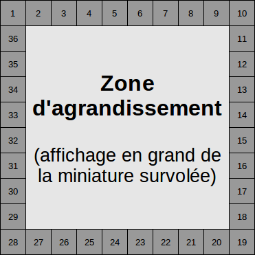
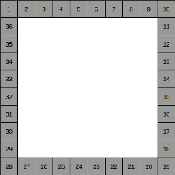
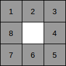
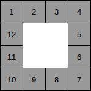
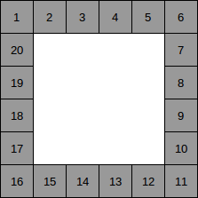
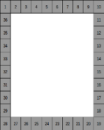
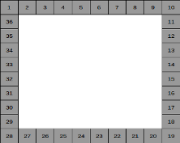
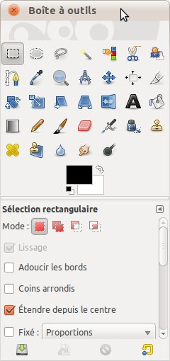
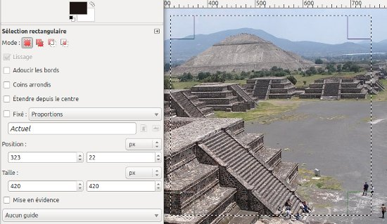

Sujet Nous allons apprendre à créer un diaporama original dont toutes les miniatures se trouveront autour de la zone d'agrandissement. Il sera entièrement réalisé en CSS et dans un premier temps il comportera 36 photos.
Voici un exemple de ce que je vous propose d'apprendre à faire afin que vous compreniez bien (exemple volontairement très basique pour agréablement vous surprendre par la suite).
Public concerné Ce TP a principalement été rédigé à l'intention des Zéros qui viennent de suivre le cours de M@teo21 et qui cherchent une assistance pour travailler un peu plus sur le CSS et être capables de gérer un site de plusieurs pages. Plus tard on simplifiera même le code à l'aide de PHP, grâce auquel on réduira drastiquement le nombre de pages en augmentant considérablement nos possibilités.
Prérequis Pour la partie I : tous les chapitres requièrent une bonne connaissance du tutoriel XHTML / CSS de M@teo21. Pour la partie II : il faudra en plus une bonne maîtrise du cours de PHP du même auteur (au moins la partie I dans sa totalité et le début de la partie II : Transmettre des données avec l'URL).
Raison d'être de ce TP Pour être tout à fait franc, c'est le tutoriel que j'aurais moi-même aimé trouver pour continuer à apprendre rapidement et simplement. Et suivant le principe du Site du Zéro, je partage.
Quoi d'autre ? On ajoutera progressivement des fonctionnalités à notre diaporama pour lui donner de la gueule ! Et vous allez apprendre à le modifier selon vos souhaits sans plus avoir besoin de moi. C'est-à-dire un nombre de photos variable, des tailles et des formes différentes, de la transparence, des bordures… Un TP, quoi !
Précisions Il ne sera absolument pas question de JavaScript ou de Flash dans ce TP, on parlera uniquement CSS et XHTML. Il n'est pas prévu de faire fonctionner ce diaporama sur IE6/7/8. Pas de patch IE au programme, donc.
Voici ce que vous saurez faire à la fin de ce tutoriel !
Je vous propose ici un tuto TP destiné aux apprentis Zéros dans le but de réaliser un diaporama simple et sympa en XHTML & CSS. Mais cela ne veut pas dire que notre diaporama sera ennuyeux, ne vous inquiétez pas.
Le but de notre TP sera d'obtenir un diaporama en affichant des petites photos en périphérie de celui-ci et en gardant l'espace central complètement vide. Par exemple, un ensemble de 10 éléments de côté (ayant une capacité totale de 10 × 10 = 100 éléments) offrirait la possibilité de présenter un diaporama de 36 photos autour d'un espace libre de 64 cases (8 en largeur et 8 en hauteur).
Ensuite, en passant le curseur de la souris sur ce qui s'avère être en fait des miniatures (nos photos en périphérie), la photo désignée s'affichera au centre, et sa taille occupera l'espace libre du milieu (grand comme 64 miniatures). Cela nous offre autant d'agrandissements par 64 que nous le souhaitons sans rechargement de page ni clic, toutes les photos étant chargées une fois pour toutes à l'ouverture de la page. Puis, en déplaçant simplement la souris de miniature en miniature, chaque photo s'affichera en grand très rapidement. Tout cela dans un diaporama original, simple et néanmoins efficace !

Diaporama de 36 photos
Séance de questions − réponses
Un TP juste pour ça ? o_O
Vous verrez que nous aurons de nombreuses occasions d'apprendre, de revoir et d'approfondir des choses !
36 photos par diaporama ? Dommage, j'aurais préféré en mettre 50 !
Ce nombre est arbitraire, il sera très facile d'adapter le diaporama à vos envies les plus folles.
Comment fait-on si l'on a un nombre de photos impair ? Ça va laisser un trou quelque part…
Bien vu ! En effet, ce choix de diaporama nous impose de présenter un nombre de photos qui se doit d'être multiple de 4, sans quoi il resterait des « cases » vides… et cela ne ferait pas très joli.
Tu ne voudrais pas nous montrer un diaporama en ligne pour qu'on puisse voir le résultat ?
Je pense que vous avez zappé l'introduction pour me demander ça. Allez donc lire ce qu'elle contient, ça pourrait vous être utile.
Nous voulons que notre agrandissement s'affiche au milieu des miniatures sans les cacher.
Dans l'exemple qui va nous intéresser au long de ce TP
Prenons l'exemple ci-dessus (diaporama de 36 photos) pour calculer la taille de notre agrandissement… On voit qu'il recouvre une surface libre équivalente à 8 miniatures de haut et de large, la surface d'agrandissement est donc égale à 8 × 8 = 64 fois la taille d'une miniature, ce qui représente bel et bien un agrandissement. La taille réelle dépendra de la taille de nos miniatures.

Diaporama de 36 photos (zoom × 64)
Diaporama avec un nombre de photos différent
Et si nous avions choisi de créer un diaporama de 8 photos, ça nous aurait donné quoi ?

Diaporama de 8 photos (zoom × 1)
Autre exemple :

Diaporama de 12 photos (zoom × 4)
12 est donc le minimum de photos que notre diaporama peut supporter, mais plus, c'est mieux :

Diaporama de 20 photos (zoom × 16)
Tableau récapitulatif
Je tiens ici à vous montrer comment évoluent la taille de l'agrandissement et la proportion de l'agrandissement en fonction du nombre de photos, par tranches indivisibles de 4. L'agrandissement augmente de façon exponentielle mais la proportion de l'agrandissement, elle, se tasse.
Nombre de photos
Agrandissement
Proportion de l'agrandissement par rapport au diaporama entier
Vous avez pu constater que plus nous avons de photos dans notre diaporama, plus le pourcentage d'espace occupé par notre agrandissement est grand. Par exemple, dans notre exemple avec 36 photos, l'agrandissement représente 64 % de la surface totale de notre diaporama.
Pour obtenir un effet esthétiquement agréable, je vous conseille de ne pas trop descendre sous la barre des 50 % (pas moins de 20 photos par diaporama), c'est-à-dire que la surface de vos miniatures ne doit pas trop dépasser celle de votre agrandissement. Sinon, votre agrandissement risquera de paraître ridiculement petit.
Là, ça dépend de chacun. J'aime les diaporamas carrés, d'autres préféreront le format portrait ou paysage. Peu importe en fait (quoique la logique tendrait vers les diaporamas au format paysage puisque c'est aussi le format de nos écrans). Ce qui compte surtout, c'est qu'elles aient toutes la même proportion ! Paysage avec paysage, portrait avec portrait et panoramique avec panoramique, sinon bonjour les horreurs…

Formats portrait, carré et paysage
Mais toi, tu vas choisir quoi tout au long de ce TP ? Ah ! non, non, je ne veux pas copier-coller bien sûr, je demande juste par curiosité…
Dans mes exemples, je vous présenterai un diaporama carré, mais si vous préférez utiliser des photos au format paysage ou autre, libre à vous ! Le code sera suffisamment bien détaillé pour que vous puissiez l'adapter à votre goût.
Et puis, l'inconvénient avec les photos carrées… c'est qu'il faut d'abord les transformer !
Transformer une image avec The Gimp
Je vous fais confiance pour ce qui est de trouver 36 photos, passons directement à la suite. :)
Rognage
Quand on veut changer les dimensions d'une image en n'en sélectionnant qu'une partie et en gardant intacte la proportion, il faut supprimer une partie de l'image. On appelle cela « rogner » une image. Pour ce faire, on utilise un logiciel de traitement d'images. Je vous en propose un qui est connu, gratuit et open source : The Gimp (il existe en outre un tutoriel à propos de The Gimp en cours d'écriture sur le SdZ).
Une fois ce logiciel installé, il suffit d'ouvrir une photo (sous Windows : Ouvrir avec → The Gimp) afin que le logiciel ouvre l'image. Vous pouvez également très bien lancer The Gimp et ouvrir l'image à partir du logiciel (Fichier → Ouvrir → Sélectionner une photo dans l'arborescence), ou encore utiliser la combinaison de touches Ctrl + O (O pour open en anglais). Dans tous les cas, on arrive au même résultat.
Je vais maintenant fournir une méthode rapide afin d'obtenir des photos carrées de 400 pixels de côté (c'est ensuite à vous d'adapter la taille à votre convenance). Je ne suis pas du tout expert en la matière, mais ça a au moins le mérite de fonctionner. N'hésitez pas à vous référer au tutoriel sur The Gimp en cas de besoin !
Procédure à suivre une fois qu'une photo est ouverte dans The Gimp :
Dans la fenêtre de gauche, appelée « Boîte à outils », activez l'outil de sélection (le rectangle en pointillés en haut à gauche).

Dans le menu des options de cette même fenêtre, activez « Étendre depuis le centre » (ce n'est pas du tout une obligation, essayez aussi sans et voyez ce qui vous convient le mieux).
The Gimp — Boîte à outils
Cliquez sur la photo (en maintenant le clic enfoncé) au centre de la partie que vous désirez garder, et agrandissez le rectangle jusqu'à obtenir les conditions suivantes.

Vous obtenez un carré (ou toute autre proportion voulue ; pour vous en assurer, vérifiez la taille de la sélection en bas de l'image (« Rectangle : 420 × 420 », par exemple) ou dans le champ « Taille » de la fenêtre « Boîte à outils », comme dans la photo ci-dessous). Votre sélection doit mesurer au moins 400 pixels de côté, puisque l'on souhaite exploiter des photos de 400 × 400 pixels dans notre exemple. Que votre sélection mesure 456 × 456, 561 × 561 ou encore 987 × 987 pixels, cela ne fait rien tant que la proportion voulue est gardée.
Rognage sur The Gimp
Ne sortez pas du cadre de la photo, sinon l'image ne sera pas pleine ! Notez qu'il est possible de déplacer la sélection : pour cela, il faut d'abord avoir cliqué sur l'élément portant les quatre flèches bleues dans la boîte à outils (deuxième ligne, cinquième élément en partant de la gauche). Il est même possible d'utiliser les flèches du clavier pour un positionnement plus fin.
La sélection doit vous convenir, sinon cliquez d'abord à l'extérieur de la sélection pour faire disparaître la sélection en cours et recommencez l'opération jusqu'à satisfaction.
Lorsque vous avez terminé, il vous faut copier la sélection afin de la réutiliser. Pour ce faire, cliquez sur Édition → Copier ou utilisez le raccourci Ctrl + C (C pour copy) lorsque le curseur cible la sélection.
La première étape est maintenant terminée.
Création de l'image rognée
La sélection qui vous convient est pour l'instant bien au chaud dans le presse-papier. Admettons qu'elle fait 420 × 420 pixels ; nous devons à présent ouvrir une fenêtre pour l'y coller.
Rendez-vous dans Fichier → Nouvelle image ou utilisez Ctrl + N (N pour new) et inscrivez dans les champs « Largeur » et « Hauteur » les valeurs de votre sélection (deux fois « 420 » dans notre exemple). Cliquez ensuite sur « Valider » : une fenêtre vierge aux dimensions requises s'ouvre.
Allez dans le menu « Édition » de la fenêtre vierge et cliquez sur « Coller » ou actionnez les touches Ctrl + V. Si tout s'est bien passé, votre sélection doit correspondre parfaitement aux dimensions de la fenêtre (sinon, il faudra recommencer !).
Redimensionnement
Nous possédons enfin cette image tant espérée ! Cependant, ses dimensions sont trop grandes (du moins supérieures à 400 × 400 pixels), vous voudrez peut-être la redimensionner.
Allez dans « Image » puis cliquez sur « Échelle et taille de l'image » ; changez la largeur et la hauteur pour « 400 » pixels, cliquez sur le bouton « Échelle » et vous aurez presque fini !
Enregistrement
Notre première image est presque prête ! Il suffit maintenant de l'enregistrer.
Cliquez sur Fichier → Enregistrer (ou utilisez Ctrl + S pour save) et renseignez le nom de l'image, par exemple « 1.jpg », puis appuyez sur Entrée (il est probable que plusieurs fenêtres s'ouvrent consécutivement à celle-ci ; si vous ne savez pas pourquoi, pressez simplement la touche Entrée ou cliquez sur « Enregistrer »).
Intégrer des images
Fichiers ou URL ?
Bonne question. Il existe plusieurs façons d'importer des photos dans votre diaporama. Si vous ne voulez pas vous embêter, je vous conseille de vous contenter des URL des photos que vous avez peut-être déjà stockées sur Picasa, Facebook ou autre.
Effectuez un clic droit sur une image en ligne puis cliquez sur « Enregistrer l'URL de l'image » (attention, ne faites pas ça sur une miniature car la qualité serait sûrement très mauvaise !). Il suffit ensuite de coller l'adresse dans le code sans se soucier d'un quelconque dossier « Images », et votre diaporama tout entier tiendra dans un unique fichier de moins de 10 ko !
Sachez qu'il vous est possible de raccourcir l'URL d'une image sur un réducteur d'URL (URL Shortener). Par exemple, l'image de Zozor (http://www.siteduzero.com/Templates/im [...] /2/zozor5.png) devient http://goo.gl/iyDsh grâce au URL Shortener de Google (http://goo.gl/). Je vous dis ça parce que les adresses des images issues de Facebook sont souvent très longues.
<img src="http://sphotos.ak.fbcdn.net/259 (…) 89_612671_n.jpg" alt="Image de profil Facebook" />
Comprenons-nous bien
Que vous utilisiez un dossier d'images ou des liens et tant que les proportions sont les mêmes, peu importe que les tailles diffèrent (par exemple, deux photos de 720 × 540 et 800 × 640 pixels ont des proportions égales (5 / 4) et presque la même taille). Mais sachez que la résolution de votre diaporama sera limitée par la photo qui aura la plus faible résolution. Il est donc important de garder le tout le plus homogène possible.
Pour ma part, en qualité de bon élève, j'ai à disposition un dossier de 36 images carrées et je décide que les miniatures feront 50 pixels de côté, histoire d'obtenir un diaporama de 500 pixels de haut et de large (50 pixels × 10 miniatures = 500 pixels). Et mes images font 600 × 600 pixels, suffisamment pour avoir de quoi combler l'espace libre au milieu des miniatures (400 × 400 pixels) et même un peu de marge pour la suite du TP…
Je le répète, si vous voulez des agrandissements de 600 × 480 pixels par exemple, faites-vous plaisir ! Vos miniatures feront alors 75 × 60 pixels, et votre diaporama, lui, mesurera 750 × 600 pixels, et ce sera parfait.
Bon, je vois qu'il y en a plein qui galèrent pour trouver des photos et les redimensionner.
Mais comment est-ce que je vais bien pouvoir les aider ?
Solution
J'ai trouvé ! Étant l'auteur des photos que j'utilise dans ce tutoriel (quatre séries de 36 photos), j'autorise tout le monde à les télécharger et à les utiliser.
Elles sont au format 600 × 600 pixels, mais d'une qualité plutôt médiocre, vous m'en excuserez. Le but n'est pas de vous donner des images précieuses, mais de vous permettre de disposer facilement de photos pour travailler dans les meilleures conditions possibles (sur une suggestion de mon validateur attitré, Thunderseb, que je remercie au passage pour ses bons conseils).
Histoire des photos
Ces photos ont été prises en août 2007 lors d'un voyage d'un mois, autant enrichissant que dépaysant, au Mexique et au Guatemala. Il s'agit de photos des quatre cités mayas que j'ai préférées :
Les photos sont réunies dans une archive .zip que vous pouvez télécharger ici. (Il est possible qu'on essaie de vous faire payer sur le site, mais sachez que vous avez droit à 100 Mo de téléchargement gratuit par jour.)
L'ensemble pèse 14,4 Mo pour 144 photos, soit une moyenne d'octets par photo assez facile à calculer. :)
Alors, facile ou pas ? Bah oui, facile ! Allez, la suite…
L'astuce utilisée ici est d'appeler la même image deux fois, toutes deux dans une balise span avec des classes différentes, .petite et .grande.
Tout le reste se passe dans le CSS !
Le CSS
On commence par donner les dimensions aux images et donc à la miniature :
.petite {
width:50px;
height:50px;
}
Puis on s'attaque à l'agrandissement… D'abord, on veut qu'il soit caché par défaut, on lui applique donc la propriété display:none.
.grande {
display:none;
}
On traite enfin ce qui se passe quand le curseur de la souris survole la miniature, c'est-à-dire que l'affichage de l'agrandissement passe de none à block, et on lui attribue des dimensions (sinon ce sont les dimensions réelles de l'image qui sont prises en compte).
Je précise tout de même qu'il était possible de faire pareil plus simplement. Comment ? En se passant carrément de la classe .petite.
Car si l'on ne précise pas quelles images sont au format 100 × 100 pixels, puis que l'on donne une taille différente aux images .grande, on arrive exactement au même résultat !
Voyons comment il faudrait modifier cette page pour retirer les .petite :
<!DOCTYPE html PUBLIC "-//W3C//DTD XHTML 1.0 Strict//EN" "http://www.w3.org/TR/xhtml1/DTD/xhtml1-strict.dtd">
<html xmlns="http://www.w3.org/1999/xhtml">
<head>
<title>Faire apparaître une image</title>
<meta http-equiv="Content-Type" content="text/html; charset=utf-8" />
<style type="text/css">
img { /* On remplace .petite par img (c'est-à-dire toutes les images) */
width:50px;
height:50px;
}
.grande {
display:none;
}
span:hover .grande {
display:block;
width:600px;
height:600px;
}
</style>
</head>
<body>
<div> <!-- On retire l'attribut class à notre miniature -->
<span><img src="votre_chemin_1.jpg" alt="Tikal" /><img class="grande" src="votre_chemin_1.jpg" alt="Tikal" /></span>
</div>
</body>
</html>
Ça nous donne un code plus simple et plus léger. Peut-être que cela paraît accessoire dans notre exemple, mais imaginez le gain que cela représente avec 36 miniatures. ;)
Ah ouais, c'est cool, mais comment sait-on quelle ligne il faut écrire avant d'appliquer les propriétés qui vont bien ?
Très bonne question ! C'est justement ce que je vous explique en dessous…
Vous avez peut-être eu du mal à trouver sur quel sélecteur appliquer le style span:hover .grande { … }. C'est un point crucial de ce TP, et aussi ce qui m'avait posé le plus de problèmes en CSS.
Procédure à suivre
Voici énoncées six des neuf règles de base à connaître et à appliquer quand on a affaire aux pseudo-classes :
Se demander si on doit limiter ou non la portée de notre style en ajoutant des conteneurs, sur un ou plusieurs niveaux. Si oui, il faudra faire suivre chaque « parent » d'une espace. #conteneur1 #conteneur2 … …
Savoir sur quel élément on agit (a, span, img, td, div…). Nous ferons référence à cet élément en tant qu'élément déclencheur dans la suite. Il est cependant facultatif de le noter si la classe (ou l'id) est déjà spécifiée à la règle 3. #conteneur1 #conteneur2 element_declencheur
Se demander s'il faut spécifier la classe ou l'id de l'élément déclencheur (ce qui limitera la portée de notre style). Si oui, on l'insère entre l'élément déclencheur et la pseudo-classe sans aucune espace (facultatif si l'élément déclencheur est spécifié). #conteneur1 #conteneur2 element_declencheur.class_dec
Savoir quel pseudo-format utiliser et le faire suivre d'une espace pour séparer « l'élément déclencheur » et « l'élément cible ». #conteneur1 #conteneur2 element_declencheur.class_dec:hover
Savoir sur quel élément cible contenu dans l'élément déclencheur on veut appliquer le style. L'élément cible doit impérativement être inclus dans l'élément déclencheur, mais il est facultatif de le spécifier si la classe (ou l'id) est déjà spécifiée à la règle 6. #conteneur1 #conteneur2 element_declencheur.class_dec:hover element_cible
Savoir si on veut spécifier une classe ou un id en particulier (qui doit impérativement être contenu dans l'élément déclencheur). Si oui, on l'ajoute à l'élément précédent sans espace (facultatif si l'élément cible est renseigné à la règle 5). #conteneur1 #conteneur2 element_declencheur.class_dec:hover element_cible.class_cib
Soit dans notre cas
Revenons-en à notre exercice et appliquons ces règles afin de trouver l'expression CSS (span:hover .grande { … }) à laquelle appliquer le style pour que notre image apparaisse :
Notre code est trop petit pour limiter la portée de notre style (il ne risque pas d'affecter autre chose, puisqu'il n'y a rien d'autre !).
On agit sur l'élément span (qui contient nos deux images), c'est notre élément déclencheur.
span…
Nous n'avons qu'une occurrence de la balise span qui ne contient même pas de classe ni d'id, il est donc inutile et impossible de préciser sur quelle classe ou id de span on veut agir.
Nous voulons utiliser la pseudo-classe :hover.
span:hover … /* N'oubliez pas l'espace à la fin ! */
Le style sera appliqué à l'élément cible img.
span:hover img…
La classe de l'élément image sur laquelle nous agissons est la classe .grande.
span:hover img.grande {…}
On obtient bien le même résultat, nous avons juste ajouté img devant notre élément cible et si vous testez chez vous, vous verrez que ça fonctionne parfaitement.
Nous n'avons fait que donner une classe.imagedouble à notre balise span ainsi qu'un id#conteneur à notre div… et ce faisant, nous avons considérablement augmenté nos possibilités.
Reprenons nos six règles en imaginant que notre CSS s'applique à énormément de code HTML :
Nous souhaitons limiter la portée de notre style au cas où nous aurions d'autres .grande ailleurs, par exemple. Justement, le div qui contient notre image possède un id#conteneur.
#conteneur … /* Suivi d'une espace */
Nous agissons toujours sur l'élément span, notre élément déclencheur.
#conteneur span…
Nous avons beaucoup de code et une erreur serait regrettable, utilisons notre classe .imagedouble.
#conteneur span.imagedouble…
Nous utilisons toujours la pseudo-classe:hover.
#conteneur span.imagedouble:hover … /* Suivi d'une espace */
Nous appliquons toujours le style à l'élément img.
#conteneur span.imagedouble:hover img…
Et la classe de notre image est toujours .grande.
#conteneur span.imagedouble:hover img.grande {…}
Allons plus loin
Je suppose que vous avez modifié le HTML dans votre page pour faire les tests ? Si ce n'est pas le cas, faites-le pour voir si ça marche bien. Maintenant, dans ce HTML modifié qui fonctionne avec ceci :
#conteneur span.imagedouble:hover img.grande {…}
… remplacez le CSS par celui que nous avions tout à l'heure :
span:hover .grande {…}
Que remarquez-vous ?
Tu nous as arnaqués, ça revient exactement au même ! Ça sert à quelque chose ton truc ?
Oui, le résultat est le même. Et oui, ça sert. :D
Il est très important de comprendre ce mécanisme. Ça peut paraître facile dans des exemples comme ceux que nous avons vus jusqu'à présent, mais ça va vite se compliquer.
En fait, toutes les expressions suivantes fonctionneraient :
#conteneur .imagedouble:hover .grande {…}
div span:hover .grande {…}
div#conteneur .imagedouble:hover .grande {…}
div#conteneur span:hover img.grande {…}
body div#conteneur span.imagedouble:hover img.grande {…}
C'est quoi, ton dernier exemple ? Ça marche aussi avec body ?
Oui, on peut remonter aussi loin que l'on veut dans la hiérarchie CSS. Et il est aussi tout à fait possible de sauter des intermédiaires, comme ceci :
body:hover .grande {…}
Mais il faut bien comprendre que tout dépend vraiment de ce que l'on souhaite obtenir.
Dans notre dernier exemple, tout fonctionne, mais puisque la pseudo-classe:hover agit sur body et que body occupe toute la largeur de notre écran, notre agrandissement apparaît même si notre souris passe quelque part à droite de l'image, alors que ce comportement n'existe pas dans nos autres exemples.
Je n'allais quand même pas vous laisser comme ça sans m'assurer d'abord que vous aviez bien tout compris !
Énoncé de l'exercice
Imaginez qu'un de vos amis est en train de créer un site et qu'il souhaite faire apparaître du texte subliminal lorsqu'un utilisateur clique sur une image. Il essaie pendant des heures sans y parvenir et, désespéré, il vient vous voir un soir pour vous demander de l'aide. Voici son code HTML :
<html>
<head>
…
<style type="text/css">
…
div div span { display:none; }
</style>
</head>
<body>
<div id="contenu">
<div class="imagetexte">
<img class="image" src="../image/tikal/1.jpg" alt="apparisseur" /><span class="text">Ceci est un message subliminal…</span>
<div>
</div>
…
</body>
</html>
Il vous demande maintenant de l'aider à faire apparaître son texte (entre les balises span) quand on clique sur son image. En plus, il tient à ce que vous n'utilisiez aucun des mots suivants : div, span.
Saurez-vous l'aider ?
Se demander si on doit limiter ou non la portée de notre style en ajoutant des conteneurs, sur un ou plusieurs niveaux. Si oui, il faudra faire suivre chaque « parent » d'une espace.
Savoir sur quel élément on agit (a, span, img, td, div…). Nous ferons référence à cet élément en tant qu'élément déclencheur dans la suite. Il est cependant facultatif de le noter si la classe (ou l'id) est déjà spécifiée à la règle 3.
Se demander s'il faut spécifier la classe ou l'id de l'élément déclencheur (ce qui limitera la portée de notre style). Si oui, on l'insère entre l'élément déclencheur et la pseudo-classe sans aucune espace (facultatif si l'élément déclencheur est spécifié).
Savoir quel pseudo-format utiliser et le faire suivre d'une espace pour séparer « l'élément déclencheur » et « l'élément cible ».
Savoir sur quel élément cible contenu dans l'élément déclencheur on veut appliquer le style. L'élément cible doit impérativement être inclus dans l'élément déclencheur, mais il est facultatif de le spécifier si la classe (ou l'id) est déjà spécifiée à la règle 6.
Savoir si on veut spécifier une classe ou un id en particulier (qui doit impérativement être contenu dans l'élément déclencheur). Si oui, on l'ajoute à l'élément précédent sans espace (facultatif si l'élément cible est renseigné à la règle 5).
− Test − Le reste du TP sera grandement simpliste si vous avez bien compris ces explications. Mais il reste encore plusieurs choses à dire sur le CSS avant que vous ne soyez fin prêts !
Un piège à éviter
Pendant vos tests, vous êtes peut-être tombés sur un cas où les six règles étaient suivies sans pour autant que le style se soit appliqué comme vous l'espériez.
Oui, et je me demandais justement pourquoi !
Je vais vous expliquer un truc que vous devrez garder à l'esprit à l'avenir.
Si par exemple vous cachez, comme dans notre diaporama, une image de cette manière :
Vous voyez bien qu'avant la classe de notre image, on spécifie l'id d'un div qui contient l'image sur laquelle on applique le style. Or, au-dessus, en essayant de rendre notre agrandissement visible à l'aide d'un display:block, nous n'avons pas mentionné l'id du div :
Oui, parce que la modification de la propriété se fait à partir d'une adresse aussi précise !
Pour terminer, on peut ajouter quelques règles supplémentaires aux six de tout à l'heure.
Quand une propriété a déjà été appliquée à un élément et que l'on souhaite la modifier, l'adresse doit, en plus d'être valide (nos six règles), être au moins aussi précise que celle qui a été utilisée pour appliquer le style la première fois. Dans le cas contraire, le style ne sera pas appliqué.
L'id ou la classe d'un élément est une information plus précise que la mention de l'élément sans id ni classe.
La mention de l'id ou de la classe rend la précision de l'élément inutile pour modifier le style. Mais attention : si une classe est appliquée à deux élémentsdiv et a, par exemple, alors préciser « élément.classe » prend toute son importance dans le cas où l'on souhaite appliquer le style uniquement à l'un ou à l'autre.
En apprendre plus sur le sujet
Nous avons vu beaucoup de choses qui, je le répète, vous seront très utiles. Mais ce n'est en fait qu'une petite partie de ce qu'il faut savoir pour être à l'aise en CSS.
Tout ce que je vous ai montré est correct, mais il existe en réalité une façon plus simple de faire apparaître notre image du début de chapitre.
Explications
Connaissez-vous le + ? Non ? C'est le sélecteur de frère adjacent !
Le quoi ?
En CSS, un frère adjacent est un élément qui suit directement un autre élément. Le + est donc un sélecteur qui sélectionne le frère adjacent de l'élément déclencheur (pour reprendre notre propre syntaxe).
En reprenant notre exercice du début de chapitre, l'élément déclencheur serait notre miniature ; nous allons faire en sorte que notre frère adjacent soit notre .grande. Ça tombe bien puisque l'agrandissement succède à notre miniature dans le code HTML.
− Test − Voici ce qui se passe avec ce code : à chaque fois qu'une image est survolée, la prochaine image à suivre dans le HTML dont la classe est .grande devient visible.
Pratique, non ?
Avantages
Ce code est plus simple que l'ancien parce que l'élément cible n'a plus besoin d'être contenu dans l'élément déclencheur.
Il n'est donc plus nécessaire d'utiliser de balises span.
Le code est plus clair, un peu moins lourd et pourtant, il fonctionne de manière rigoureusement identique.
Cerise sur le gâteau, on peut même, grâce au sélecteur de frère adjacent, se passer de notre classe .grande.
Exercice dérivé du précédent
Reprenez le code ci-dessus pour qu'il fonctionne de la même manière mais en se passant de la classe .grande. Avec ce que vous avez appris, c'est facile et rapide !
… … … … … …
Réponse :
<!DOCTYPE html PUBLIC "-//W3C//DTD XHTML 1.0 Strict//EN" "http://www.w3.org/TR/xhtml1/DTD/xhtml1-strict.dtd">
<html xmlns="http://www.w3.org/1999/xhtml">
<head>
<title>Faire apparaître une image</title>
<meta http-equiv="Content-Type" content="text/html; charset=utf-8" />
<style type="text/css">
img { /* Rien ne change pour la miniature */
width:50px;
height:50px;
}
img + img { /* On cache les agrandissements avec le sélecteur de */
display:none; /* frère adjacent en ne donnant que le nom des éléments */
}
img:hover + img { /* Au survol de la miniature par la souris */
display:block; /* L'agrandissement associé apparaît */
width:600px; /* Et on lui donne ses dimensions */
height:600px;
}
</style>
</head>
<body>
<div> <!-- On a enlevé la classe .grande -->
<img src="../image/tikal/29.jpg" alt="Tikal" /><img src="../image/tikal/29.jpg" alt="Tikal" />
</div>
</body>
</html>
Le fonctionnement est exactement le même sauf que notre code est encore plus léger et plus clair.
Dernier exercice du chapitre
Que se passerait-il si nous utilisions le CSS ci-dessus avec une succession d'images comme ceci :
Alors nous ne verrions que la miniature de la première image ! Et au survol, nous ne verrions que l'agrandissement de la deuxième.
Parce que le CSS fait en sorte que toutes les images précédées d'une image sont cachées, on ne voit que la première miniature au chargement de la page puisque c'est la seule qui n'est pas précédée par une image.
Ensuite, le CSS indique qu'au survol d'une image, on affiche l'image suivante au format 600 × 600 pixels ; et c'est ce qu'il fait en affichant la deuxième image de notre HTML. Les autres n'auront jamais l'occasion de s'afficher en grand. − Test −
Conclusion
Attention donc, car bien souvent, ce qui fonctionne dans un cas ne fonctionne pas dans l'autre, il faut toujours se poser les bonnes questions et bien connaître les éléments manipulés.
Vous connaissez à présent deux méthodes afin d'afficher des images ou du texte avec un :hover, et vous choisirez celle qui vous convient le mieux ! Quand ce sera possible, j'opterai pour la deuxième solution puisque qu'elle est plus concise et plus simple, et aussi parce que les span nous poseront bientôt problème.
Vous aimez les exercices ? Ça tombe bien, il y en a plein dans le chapitre suivant !
Je crois que vous avez bien compris maintenant ce que nous voulons faire, il est donc temps de se lancer. Je vais vous demander de créer un fichier *.html qui, dans un premier temps, ne fait que présenter les miniatures (pour un vrai diaporama, il faudra encore attendre un tout petit peu). Vos photos (36, comme moi, ou tout autre multiple de 4 supérieur ou égal à 12) doivent être affichées en miniatures les unes à côté des autres (toutes proportions gardées) de cette manière :
Veillez aussi à respecter ces points :
les miniatures sont collées les unes aux autres ;
l'utilisation de tableaux est interdite (nos photos n'étant pas des données tabulaires) ;
Je vous conseille vivement de bien essayer avant de regarder la réponse. Mais avant de vous lâcher en pleine nature, je vais quand même vous donner quelques pistes de réflexion :
S'il vous a fallu du temps pour trouver, c'est normal, positionner une multitude d'éléments est rarement quelque chose qui se fait d'instinct. Ce TP est justement là pour que ça devienne un réflexe. :)
Nous avons d'abord placé cinq div (.haut, .gauche, .centre, .droite, .bas) dans un div conteneur (#diaporama), nous avons ensuite gardé .centre vide et mis nos photos dans .haut, .gauche, .droite et .bas.
Mettre quelles photos dans quoi
Le nombre de photos dans .haut et .bas est égal à [nbre photos / 4 + 1], soit 36 / 4 + 1 = 10. Ainsi, on prend toute la première rangée d'éléments d'un coup et il sera facile de les placer avec notre CSS.
Le nombre de photos dans .gauche et .droite est quant à lui égal à [nbre photos / 4 - 1], soit 36 / 4 - 1 = 8. Et 8 miniatures, c'est aussi la hauteur de notre .centre qui est sur la même rangée.
Choses à bien comprendre
La largeur de .gauche + .centre + .droite est égale à la largeur de .haut et à celle de .bas. La hauteur de .gauche et celle de .droite sont égales à celle de .centre.
Ce schéma synthétise bien ce qui vient d'être dit :
Le CSS
float:left sur les éléments div
Contrairement aux éléments de type inline, les éléments de type block ne tiennent pas à plusieurs sur une même ligne. C'est par ailleurs leur principale distinction. Pour rendre cela possible, il faut placer certains blocs grâce à la propriété float.
Ah oui ? Et quels div au juste ?
Par défaut, un élément bloc va se positionner au début d'une rangée, sauf si l'élément précédent est de type float et qu'il lui reste suffisamment de place pour s'installer, auquel cas il se place juste après dans la même rangée. Nous aurons donc besoin d'appliquer cette propriété à deux blocs, .gauche et .centre, car ce sont eux qui voient un autre bloc se placer à leur droite.
Les autres blocs se positionnent automatiquement, même .droite puisque le float:left de .centre l'autorise à se placer sur la même rangée tant qu'il y a suffisamment de place (à nous de nous en assurer).
#diaporama .gauche {
float:left; /* .gauche doit flotter à gauche afin que les
différents <div> puissent tenir côte à côte */
width:50px; /* Largeur des miniatures */
height:400px; /* Hauteur des agrandissements [hauteur miniature × 8] */
}
#diaporama .centre {
float:left; /* .centre vient s'intercaler horizontalement entre .gauche
et .droite et doit donc aussi flotter à gauche */
width:400px; /* Largeur des agrandissements [largeur miniature × 8] */
height:400px; /* Hauteur des agrandissements [hauteur miniature × 8] */
}
Je répète, au cas où, que nous n'avons pas pris la peine de faire flotter nos div.haut, .droite et .bas à gauche puisqu'ils se placeront automatiquement là où nous souhaitons qu'ils se placent (suivant les règles du CSS).
float:left sur les miniatures
Nous allons aussi utiliser la propriété float:left pour nos miniatures, afin qu'elles se collent les unes aux autres. Vous pouvez essayer de l'enlever pour voir le résultat.
#diaporama img {
float:left; /* Toutes nos miniatures flotteront à gauche afin qu'elles se collent toutes ensemble */
width:50px; /* Largeur des miniatures */
height:50px; /* Hauteur des miniatures */
}
Mais encore ?
Tout le reste du CSS ne concernait que la taille des éléments. Vous pouvez vous référer aux commentaires si vous avez des difficultés, mais ça ne devrait pas être trop difficile pour vous.
Vous remarquerez que dans mes commentaires, pour des raisons pratiques, je prends comme base de mesure la hauteur, la largeur et le nombre de miniatures présentes dans notre diaporama.
Par exemple : /* Largeur totale du diaporama [largeur d'une miniature × (nbre photos / 4 + 1)] */. Dans mon cas, une miniature mesure 50 × 50 pixels et mon diaporama comporte 36 photos, alors la largeur totale de mon diaporama sera de [50 × (36 / 4 + 1)] = 50 × 10 = 500 pixels.
Avantages :
il suffit de connaître la largeur et la hauteur des miniatures ainsi que leur nombre afin de connaître toutes les dimensions nécessaires dans le CSS ;
on peut facilement adapter ce code à n'importe quel diaporama, quel que soit le nombre de photos qu'il comporte (tant que la condition d'avoir un nombre de photos multiple de 4 est respectée).
Par exemple, le Zéro qui a décidé de créer un diaporama de 24 photos avec des miniatures au format paysage de 80 × 64 pixels disposera des propriétés suivantes :
une largeur de diaporama égale à : 80 × (24 / 4 + 1) = 80 × 7 = 560 pixels ;
etc. ;
une hauteur d'agrandissement de : 64 × (24 / 4 - 1) = 64 × 5 = 320 pixels ;
etc.
Essayons cet exemple : on désire un diaporama de 560 pixels comportant 24 photos ; quelle sera la largeur des miniatures ? Largeur d'une miniature = 4 × 560 / (24 + 4) = 80 pixels.
Avant de nous lancer dans notre beau diaporama, place à un quatrième exercice !
Mais d'abord, apprenons à centrer un élément dans une page web sans connaître la résolution de l'écran de l'utilisateur. Vous ne savez pas comment faire ? Pourtant c'est facile, la réponse se trouve dans le titre !
Intérêt de la chose
Le bonheur avec les marges négatives, c'est que cela permet à un objet de rester centré en hauteur et en largeur avant, pendant et après modification de la taille de la fenêtre du navigateur. Ce sera très pratique dans notre cas car il serait dommage que le redimensionnement d'une fenêtre cache une partie de notre diaporama !
Pour centrer horizontalement une photo de 100 × 100 pixels sur une page, voici comment il faut faire :
faire commencer la photo à 50 % du bord gauche de la fenêtre ;
retrancher la moitié de la largeur de notre photo.
C'est aussi simple que ça !
Ensuite, pour le positionnement vertical, on fait la même chose. Ce qui nous donne ?
… … … … … …
Résultat
<!DOCTYPE html PUBLIC "-//W3C//DTD XHTML 1.0 Strict//EN" "http://www.w3.org/TR/xhtml1/DTD/xhtml1-strict.dtd">
<html xmlns="http://www.w3.org/1999/xhtml">
<head>
<title>Diaporama</title>
<meta http-equiv="Content-Type" content="text/html; charset=utf-8" />
<style type="text/css">
img {
position : absolute; /* On décide où placer notre image */
width : 100px; /* Largeur de notre image */
left : 50%; /* Image décalée du bord gauche de la moitié de la largeur de l'écran */
margin-left : -50px; /* Puis on l'y rapproche de la moitié de la largeur de l'image pour la centrer */
height : 100px; /* Hauteur de notre image */
top : 50%; /* Image décalée du bord haut de la moitié de la hauteur de l'écran */
margin-top : -50px; /* Puis on l'y rapproche de la moitié de la hauteur de l'image pour la centrer */
}
</style>
</head>
<body>
<div>
<img src="votre_chemin/x.jpg" alt="Image bidon parfaitement centrée en hauteur et en largeur" />
</div>
</body>
</html>
Faites des essais chez vous jusqu'à ce que vous ayez bien compris, car nous allons énormément avoir recours à cette technique dans la suite du TP. Essayez aussi de changer la taille de votre fenêtre pour voir ce qu'il se passe…
Le grand jour est arrivé ! Vous allez avoir la possibilité de mettre en application tout ce que nous avons revu ou appris depuis le début de ce TP :
présenter des miniatures autour d'un espace vide ;
cacher les agrandissements par défaut ;
utiliser la pseudo-classe :hover pour faire apparaître des agrandissements ;
centrer des éléments en hauteur et en largeur.
Cette liste est en fait le détail de tout ce qu'il faut savoir pour être capable de créer notre diaporama !
Exercice
Vous pouvez vous appuyer sur le code que vous avez déjà trouvé au début de ce chapitre en le complétant jusqu'à obtenir le résultat attendu.
Je rappelle que le passage de la souris suffit à afficher les agrandissements et que l'agrandissement occupe tout l'espace entre les miniatures dans notre diaporama centré en hauteur et en largeur.
… … … … … …
Réponse
<!DOCTYPE html PUBLIC "-//W3C//DTD XHTML 1.0 Strict//EN" "http://www.w3.org/TR/xhtml1/DTD/xhtml1-strict.dtd">
<html xmlns="http://www.w3.org/1999/xhtml">
<head>
<title>Tikal</title>
<meta http-equiv="Content-Type" content="text/html; charset=utf-8" />
<style type="text/css">
#diaporama {
width:500px;
height:500px;
position:absolute;
width:500px;
left:50%; /* On pousse le diaporama à droite de la moitié de la largeur de la fenêtre */
margin-left:-250px; /* puis on le rapproche de la gauche de la moitié de sa propre largeur. */
height:500px;
top:50%; /* On pousse le diaporama en bas de la moitié de la hauteur de la fenêtre */
margin-top:-250px; /* puis on le rapproche du haut de la moitié de sa propre hauteur. */
}
#diaporama div img + .grande { /* On utilise ici le sélecteur de frère adjacent */
display:none; /* pour rendre tous nos agrandissements invisibles. */
}
#diaporama div img:hover + .grande {
display:inline; /* Au survol de la souris, l'image adjacente à la miniature, notre agrandissement, devient visible */
position:absolute; /* et on le place au centre de la page pour qu'il se loge au centre du diaporama. */
width:400px; /* Les dimensions de l'agrandissement sont les mêmes que celles de notre div.centre. */
left:50%;
margin-left:-200px; /* On centre l'agrandissement par rapport à sa propre largeur. */
height:400px;
top:50%;
margin-top:-200px; /* On centre l'agrandissement par rapport à sa propre hauteur. */
}
#diaporama img {
float:left;
width:50px;
height:50px;
}
#diaporama .haut,
#diaporama .bas {
width:500px;
height:50px;
}
#diaporama .gauche {
float:left;
width:50px;
height:400px;
}
#diaporama .centre {
float:left;
width:400px;
height:400px;
}
</style>
</head>
<body>
<div id="diaporama">
<div class="haut">
<img src="votre_chemin/1.jpg" alt="Tikal" /><img class="grande" src="votre_chemin/1.jpg" alt="Tikal" />
<img src="votre_chemin/2.jpg" alt="Tikal" /><img class="grande" src="votre_chemin/2.jpg" alt="Tikal" />
<img src="votre_chemin/3.jpg" alt="Tikal" /><img class="grande" src="votre_chemin/3.jpg" alt="Tikal" />
<img src="votre_chemin/4.jpg" alt="Tikal" /><img class="grande" src="votre_chemin/4.jpg" alt="Tikal" />
<img src="votre_chemin/5.jpg" alt="Tikal" /><img class="grande" src="votre_chemin/5.jpg" alt="Tikal" />
<img src="votre_chemin/6.jpg" alt="Tikal" /><img class="grande" src="votre_chemin/6.jpg" alt="Tikal" />
<img src="votre_chemin/7.jpg" alt="Tikal" /><img class="grande" src="votre_chemin/7.jpg" alt="Tikal" />
<img src="votre_chemin/8.jpg" alt="Tikal" /><img class="grande" src="votre_chemin/8.jpg" alt="Tikal" />
<img src="votre_chemin/9.jpg" alt="Tikal" /><img class="grande" src="votre_chemin/9.jpg" alt="Tikal" />
<img src="votre_chemin/10.jpg" alt="Tikal" /><img class="grande" src="votre_chemin/10.jpg" alt="Tikal" />
</div>
<div class="gauche">
<img src="votre_chemin/36.jpg" alt="Tikal" /><img class="grande" src="votre_chemin/36.jpg" alt="Tikal" />
<img src="votre_chemin/35.jpg" alt="Tikal" /><img class="grande" src="votre_chemin/35.jpg" alt="Tikal" />
<img src="votre_chemin/34.jpg" alt="Tikal" /><img class="grande" src="votre_chemin/34.jpg" alt="Tikal" />
<img src="votre_chemin/33.jpg" alt="Tikal" /><img class="grande" src="votre_chemin/33.jpg" alt="Tikal" />
<img src="votre_chemin/32.jpg" alt="Tikal" /><img class="grande" src="votre_chemin/32.jpg" alt="Tikal" />
<img src="votre_chemin/31.jpg" alt="Tikal" /><img class="grande" src="votre_chemin/31.jpg" alt="Tikal" />
<img src="votre_chemin/30.jpg" alt="Tikal" /><img class="grande" src="votre_chemin/30.jpg" alt="Tikal" />
<img src="votre_chemin/29.jpg" alt="Tikal" /><img class="grande" src="votre_chemin/29.jpg" alt="Tikal" />
</div>
<div class="centre">
</div>
<div class="droite">
<img src="votre_chemin/11.jpg" alt="Tikal" /><img class="grande" src="votre_chemin/11.jpg" alt="Tikal" />
<img src="votre_chemin/12.jpg" alt="Tikal" /><img class="grande" src="votre_chemin/12.jpg" alt="Tikal" />
<img src="votre_chemin/13.jpg" alt="Tikal" /><img class="grande" src="votre_chemin/13.jpg" alt="Tikal" />
<img src="votre_chemin/14.jpg" alt="Tikal" /><img class="grande" src="votre_chemin/14.jpg" alt="Tikal" />
<img src="votre_chemin/15.jpg" alt="Tikal" /><img class="grande" src="votre_chemin/15.jpg" alt="Tikal" />
<img src="votre_chemin/16.jpg" alt="Tikal" /><img class="grande" src="votre_chemin/16.jpg" alt="Tikal" />
<img src="votre_chemin/17.jpg" alt="Tikal" /><img class="grande" src="votre_chemin/17.jpg" alt="Tikal" />
<img src="votre_chemin/18.jpg" alt="Tikal" /><img class="grande" src="votre_chemin/18.jpg" alt="Tikal" />
</div>
<div class="bas">
<img src="votre_chemin/28.jpg" alt="Tikal" /><img class="grande" src="votre_chemin/28.jpg" alt="Tikal" />
<img src="votre_chemin/27.jpg" alt="Tikal" /><img class="grande" src="votre_chemin/27.jpg" alt="Tikal" />
<img src="votre_chemin/26.jpg" alt="Tikal" /><img class="grande" src="votre_chemin/26.jpg" alt="Tikal" />
<img src="votre_chemin/25.jpg" alt="Tikal" /><img class="grande" src="votre_chemin/25.jpg" alt="Tikal" />
<img src="votre_chemin/24.jpg" alt="Tikal" /><img class="grande" src="votre_chemin/24.jpg" alt="Tikal" />
<img src="votre_chemin/23.jpg" alt="Tikal" /><img class="grande" src="votre_chemin/23.jpg" alt="Tikal" />
<img src="votre_chemin/22.jpg" alt="Tikal" /><img class="grande" src="votre_chemin/22.jpg" alt="Tikal" />
<img src="votre_chemin/21.jpg" alt="Tikal" /><img class="grande" src="votre_chemin/21.jpg" alt="Tikal" />
<img src="votre_chemin/20.jpg" alt="Tikal" /><img class="grande" src="votre_chemin/20.jpg" alt="Tikal" />
<img src="votre_chemin/19.jpg" alt="Tikal" /><img class="grande" src="votre_chemin/19.jpg" alt="Tikal" />
</div>
</div>
</body>
</html>
Vous avez pu constater que les changements dans le code HTML par rapport à ce que nous avions au debut de ce chapitre sont minimes.
Il a suffi de doubler les images en donnant aux doubles un nom de classe commun : j'ai choisi .grande. Tout le reste demeure strictement identique.
Vous remarquerez que je n'ai pas utilisé de balises span puisque je me sers du sélecteur de frère adjacent pour rendre invisible mes agrandissements…
Le CSS
En revanche, les changements côté CSS sont plus nombreux, voyons cela de plus près.
Centrage de nos éléments
Nous avons deux éléments à centrer : notre diaporama et notre agrandissement. Dans les deux cas, j'ai utilisé les marges négatives et j'ai procédé exactement comme nous l'avons vu ci-dessus : positionnement en absolu, retrait de 50 % et rapprochement de la moitié de la largeur ou hauteur. Inutile de revenir là-dessus plus longtemps…
Invisibilité
Pour cacher nos agrandissements, j'ai utilisé, comme annoncé, le sélecteur de frère adjacent car il est plus simple et plus léger à mettre en place que la méthode avec des balises span.
#diaporama div img + .grande { /* On utilise ici le sélecteur de frère adjacent */
display:none; /* pour rendre tous nos agrandissements invisibles. */
}
Nos images .grande sont bien les éléments qui suivent les miniatures dans notre HTML, donc les agrandissements n'apparaîtront pas.
Si nous avions regroupé les miniatures et les agrandissements dans des balises span de cette manière :
La méthode avec les balises span ne laisse pas l'agrandissement s'effacer quand on place le curseur dessus… et c'est embêtant pour la suite !
Pourquoi cette différence ?
C'est d'une logique implacable…
Avec le +, on demande au CSS d'afficher l'agrandissement quand le curseur se promène sur la miniature. Sous-entendu, quand il n'y est plus, l'agrandissement n'est plus.
Avec les span, on demande au CSS d'afficher l'agrandissement quand on se trouve sur la miniature quand le curseur se balade sur le span ! Et que contient le span ? Deux choses : la miniature et l'agrandissement. Donc lorsque le curseur passe de la miniature à l'agrandissement, on se trouve toujours sur le contenu de span et l'agrandissement reste alors affiché.
Il ne serait pas correct de ma part de parler de diaporamas pendant six chapitres sans vous montrer qu'il est possible d'en construire un plus simple. Nous avons utilisé chaque image en double parce que c'est ce que je vous avais demandé… Sachez que ce n'était pas obligatoire (eh oui, je vous ai manipulés à ma guise !).
Premier exercice
Consignes
Je vous demande donc d'essayer de réaliser un autre diaporama, similaire au précédent, mais sans doubler les images et sans classe pour les images.
Essayons dans un premier temps de faire ça sans mettre nos images dans des conteneurs individuels et voyons pourquoi… ça ne fonctionne pas. o_O (Pas la peine de faire cette tête-là !).
On affiche correctement la structure de miniatures, aucun souci de ce côté-là. Le problème qui se pose vient après.
En s'en allant, l'image laisse un trou dans l'architecture que l'image du dessous vient combler, d'où le trou en bas ou à droite de .haut, .gauche, .droite ou .bas, selon où l'on place le curseur.
Une miniature vient alors se placer sous le curseur juste après que celle survolée au début est envoyée au centre. Donc lorsqu'on déplace le curseur de la souris, cela provoque des clignotements désagréables et l'effet espéré ne se produit pas.
Deuxième exercice
Consignes
On voudrait que lorsqu'une image est survolée, l'espace qu'elle occupait reste vide…
Nous avons fait exactement comme cela a été stipulé dans les indices.
Nos div conteneurs d'image ont reçu les dimensions des images, de sorte que lorsqu'une image est obligée d'aller s'agrandir pour se nicher au centre du diaporama à cause du survol de la souris, l'espace qu'elle laisse dans la ceinture de miniatures n'est pas comblé, ni la structure chamboulée.
Le pour et le contre
Avantage de cette architecture : le diaporama est plus simple et plus léger que lorsque l'on utilise les images en double.
Inconvénient de cette architecture : vous l'aurez remarqué, l'inconvénient majeur est que l'on ne voit plus la miniature pendant qu'elle est survolée.
Si seulement il existait une manière de dupliquer les éléments, alors oui, on ferait ainsi. Malheureusement, c'est impossible dans des sites statiques.
Le plus dur est fait, il ne nous reste maintenant qu'à nous amuser un peu en rendant le tout plus joli. :)
Notre diaporama tient déjà la route, mais nous n'allons pas nous arrêter en si bon chemin.
Pour commencer, je vous propose d'y ajouter du texte (titre, menu…) que nous mettrons… dans l'espace central ! Comme ça, quand un agrandissement sera affiché, les photos cacheront notre texte et on ne verra plus que nos belles photos.
Voyons voir ce que ça peut donner…
Quelques consignes
Je vous propose de remplir toutes les conditions suivantes (vous aurez votre vie pour essayer autre chose).
Notre texte sera placé dans le div.centre.
Nous donnerons un titre au choix à notre diaporama dans un h1.
Nous ajouterons un lien vers un deuxième diaporama dans un p.
Notre lien sera toujours gris clair, mais si on le survole ou si on clique dessus il sera gris foncé. Il ne sera jamais souligné.
Nous créerons une deuxième feuille HTML avec un second diaporama pour que les deux puissent s'appeler mutuellement (grâce au lien dans le p).
Nous mettrons tout le CSS dans une feuille à part.
Vous n'oublierez pas de renseigner la propriété font-family avec les polices de votre choix.
Tout notre texte sera centré en hauteur et en largeur.
Précisions
Je vous ai demandé de centrer le texte en hauteur et en largeur et cela mérite quelques précisions.
Pour centrer du texte horizontalement, il suffit d'utiliser la propriété text-align que vous devez déjà connaître, et ça n'a rien de sorcier. Mais pour ce qui est de centrer le texte en hauteur, là, ça devient plus épineux.
Bah non, nous sommes peut-être débutants mais nous avons tous déjà entendu parler de la propriété vertical-align !
vertical-align permet effectivement de centrer du contenu en hauteur de cette manière :
vertical-align:middle;
Mais le problème est que les éléments à aligner doivent être de type inline ou inline-block et que l'utilisation du positionnement absolu pour notre diaporama nous coince. Donc nous allons faire autrement pour centrer notre texte en hauteur.
Voici ce que je vous propose :
placer notre texte dans un div.contenu à l'intérieur de .centre ;
donner à .contenu une position absolue (il se superposera à .centre) ;
placer notre .contenu à 50 % du bord haut ;
ajuster le centrage vertical du div en lui attribuant une marge haut qu'il faudra estimer à l'œil ;
le tout en s'assurant que notre contenu ne déborde pas de .centre.
Ou encore :
placer notre texte dans un div.contenu à l'intérieur de .centre ;
donner à .contenu une position absolue et une hauteur fixe ;
s'assurer que le texte occupe toute sa hauteur ;
centrer .contenu verticalement comme nous savons faire ;
le tout en s'assurant que notre contenu ne déborde pas de .centre.
Précisions de précisions :
Il va falloir faire quelque chose pour le centrage horizontal suite au positionnement en absolu.
Si notre contenu débordait de .centre, le survol des miniatures du bas ne permettrait plus l'apparition des agrandissements puisque le curseur se retrouverait en fait au-dessus de .contenu…
Nous avons besoin d'un div dans .centre parce que .centredoit garder la hauteur de .gauche et de .droiteet la largeur de .haut et de .baset son positionnement, sans quoi notre structure se casserait la figure.
À vous de jouer
Ça y est, j'en ai fini avec mes explications, c'est à vous de travailler maintenant. N'oubliez pas de satisfaire à toutes nos consignes ! Tout cela représente au moins quelques minutes de travail, alors je vous laisse un moment, je file me préparer un café…
… … … … … …
Le XHTML
Vous avez déjà terminé ? Je n'ai même pas fini mon café ! Très bien, comparons nos résultats. Voyez ce que j'attendais de vous, et si ce n'est pas ce que vous avez obtenu alors vous voudrez peut-être continuer à chercher un peu avant de voir le code que je vous ai concocté !
… … … … … …
…
<div class="centre">
<div class="contenu">
<h1>Titre du diaporama</h1>
<br /><br />
<p>
À voir également :<br /><br />
<a href="votre_fichier.html">Lien vers votre autre diaporama</a>
</p>
</div>
</div>
…
Il peut y avoir des variantes mais grosso-modo vous avez dû trouver la même chose. Ce qui distingue ce fichier HTML de l'autre fichier que je vous ai demandé de créer, c'est uniquement l'adresse du lien et des photos. − Test −
Il faut donc positionner le bloc en absolu et le pousser vers le bas jusqu'à ce qu'il soit grossièrement centré en hauteur. Mais attention ! il faut aussi lui donner toute la largeur de .centre, sinon il ne prendra que la place dont il a besoin et le centrage horizontal ne sera pas parfait !
Lorsque nous avons positionné nos éléments, cela a été fait dans un certain ordre chronologique : d'abord les photos de .haut, puis celles de .gauche, ensuite notre .centre, puis les photos de .droite et enfin celles de .bas.
Vous savez que si vous affichez des éléments sur d'autres éléments, le dernier élément affiché s'affichera par-dessus les autres (à condition que le positionnement autorise plusieurs éléments à partager le même espace). Un peu comme le système des calques dans un logiciel de graphisme.
Et notre problème, c'est que quand nous affichons l'agrandissement d'une des miniatures de .haut par exemple, eh bien c'est comme si nous affichions cette image avant de commander l'affichage de notre menu (même si cet agrandissement apparaît après le chargement de la page à l'aide d'un :hover).
En toute logique, le texte sera donc visible sur tous nos agrandissements qui arrivent chronologiquement avant.contenu dans le HTML, c'est-à-dire toutes les photos de .haut et de .gauche. En revanche, les photos de .droite et de .bas qui arrivent après.contenu se positionnent par-dessus .contenu. C'est pour ça que ce « problème » ne touche que la moitié de nos photos.
Moyen de contournement
Pour résoudre notre problème, nous utiliserons la propriété CSS z-index, mais je ne vais pas vous donner la solution tout de suite. Je voudrais que vous cherchiez sur Internet jusqu'à ce que vous compreniez, parce que j'ai peur qu'en vous donnant les réponses trop facilement vous ne deveniez trop passifs.
Si vous lisez ça, c'est soit parce que vous avez réussi à utiliser z-index pour afficher nos agrandissements sans le texte, soit parce que vous avez essayé pendant une semaine sans manger et que vous avez finalement abandonné…
D'accord, d'accord ! Voici la réponse :
#diaporama div .grande { z-index:1; }
Par cette petite ligne, nous disons à CSS que toutes nos images .grande ont un coefficient z-index de 1. Par défaut, la priorité d'affichage de nos éléments est déduite par rapport à la chronologie de leur arrivée. Or, là, nous stipulons une priorité d'empilement à nos agrandissements. Cela fonctionne parce qu'aucun autre élément de la même zone n'a de z-index plus élevé que 1.
Un peu de pratique
Question :
Essayez par exemple de donner un z-index de -1 à .contenu et testez le résultat… Que constatez-vous ?
Réponse :
Le texte n'est plus sélectionnable ;
le lien n'est plus cliquable.
Parce que .contenu a été mis au dernier plan : puisqu'il n'y a rien dans .centre pour cacher le texte, alors ce dernier reste visible, il est comme caché par une couche transparente. Pour bien comprendre, essayez de donner à .centre une couleur de fond quelconque, vous verrez que le texte de .contenu ne sera plus visible.
Question :
Pourra-t-on cliquer sur notre lien si on attribue des z-index ainsi ?
Oui, parce que .centre étant en position float, z-index n'a pas d'effet sur lui. .contenu peut se mettre derrière .centre mais .centre ne peut pas venir se mettre devant .contenu. Tordu, n'est-ce pas ? o_O
La priorité des éléments est ainsi faite : les agrandissements sont moins prioritaires que .contenu qui est moins prioritaire que .centre (à 0 par défaut !). Donc :
le texte n'est pas sélectionnable ;
le lien n'est pas cliquable ;
et le texte de .contenu recouvre tous les agrandissements.
Le résultat opposé de ce qu'on voulait en fait ! Essayez si vous ne me croyez pas. :)
Question :
Si on avait cette configuration :
#diaporama div .grande { z-index:10; }
Quelle serait la condition pour que le texte ne s'affiche au-dessus d'aucun agrandissement et que le lien soit cliquable ?
Réponse :
Il suffirait que .contenu se voie attribuer un z-index inférieur à 10 et supérieur ou égal à celui de .centre (à 0 par défaut).
Question :
Que se passerait-il si on avait cette configuration ?
On retomberait exactement sur notre problème de départ. Puisque .contenu et .centre ont la même valeur z-index, alors c'est la chronologie d'appel dans le HTML qui détermine la priorité d'affichage, et on verra le texte de .contenu sur les agrandissements des miniatures inclues dans .haut et .gauche.
Je n'ai plus rien à dire sur z-index et je pense que vous avez saisi son fonctionnement. Passons à la suite !
Ça sert à arrondir les coins de nos éléments HTML.
C'est possible ? Il doit y avoir un piège… non ?
Oui, et un gros :
Voici comment on l'utilise :
border-radius:valeur_en_pixels/%/em;
Par exemple :
border-radius:15px;
Compatibilité
Mais il semble que Firefox (entre autres) ne l'accepte pas comme tel en novembre 2010. Il faudra donc remplacer cette ligne par d'autres avec préfixes pour que tous les navigateurs récents (Mozilla, Opera, Safari, IE9 et Chrome) affichent correctement ce que vous leur demanderez (même si ce n'est pas obligatoire pour tous) :
Et comment je sais si mon navigateur supporte cette propriété ?
Tester son navigateur
En suivant ce lien de test, vous devriez obtenir une image centrée à l'intérieur d'un conteneur plus large que l'image, centré lui aussi. Et bien sûr, nos deux éléments se sont vu appliquer la propriété border-radius (sinon ça ne servirait à rien :lol: ) :
Toutefois, chez moi, seul Chrome arrondit les coins de l'image en plus de ceux du conteneur. Opera et Firefox (dans leurs dernières versions sous Linux) n'arrondissent que les coins du conteneur.
Il est également possible d'arrondir coin par coin en déterminant les quatre valeurs séparément ou d'un coup, dans le sens des aiguilles d'une montre, à l'instar des margin et autres padding.
Arrondir coin par coin
Pour arrondir tous les coins sauf le coin en bas à droite, on ferait ainsi en théorie :
border-radius:15px 15px 0px 15px;
Un joli résultat
En théorie encore, la propriété border-radius permet de faire de nos éléments des ronds.
Si, à la place de 15 pixels tout à l'heure, nous avions mis 50 % de la largeur de nos éléments, ceux-ci auraient dû s'arrondir :
Pour cet exercice, je vous propose une approche différente de ce que nous avons fait jusqu'à présent. Je vais vous donner un exemple que j'ai réalisé et je vais vous demander d'essayer de l'imiter sans regarder le code.
Contrainte : l'utilisation de classes est interdite pour nos images et nos span.
À l'attaque !
Prêts ? O.K. ! Je vous demande donc d'essayer de réaliser quelque chose qui ressemble à ceci : exemple à copier.
… … … … … …
Première série d'indices :
Commençons avec le HTML :
nous devons ajouter des commentaires aux photos que nous voulons commenter dans un conteneur ;
nous devons regrouper chaque miniature ainsi que son agrandissement et son commentaire dans un autre conteneur.
Puis le CSS :
nous allons avoir besoin des sélecteurs de frère adjacent ;
il faut commencer par cacher les agrandissements et les commentaires ;
il faut ensuite modifier la façon dont on fait apparaître les agrandissements et trouver comment faire apparaître les commentaires.
Ce n'est qu'une fois que ces bases seront obtenues qu'il sera question de rendre le tout plus élégant.
… … … … … …
Deuxième série d'indices :
Vous vous êtes creusé la tête et vous n'avez toujours pas réussi ? Peut-être que je vous en demande trop alors. :p
Votre commentaire sera contenu dans un span qui se trouvera lui-même dans un span avec la miniature et l'agrandissement correspondants. S'il n'y a pas de commentaire, il faudra quand même regrouper la miniature avec son agrandissement pour homogénéiser le tout.
On obtient donc l'une ou l'autre de ses structures autant de fois qu'on a de photos dans notre diaporama :
À partir de là, on voit mieux comment agir sur nos éléments.
On veut cacher l'agrandissement qui est, admettons, en deuxième position, quel moyen a-t-on ? On voit qu'il suit immédiatement une image… Affaire à suivre ! Pour ce qui est du commentaire, c'est un span qui suit immédiatement une image, ou encore un span descendant d'un span, au choix !
Une fois que vous avez fait disparaître vos agrandissements et commentaires, essayez de continuer par vous-mêmes.
… … … … … …
Troisième série d'indices :
Pour faire apparaître notre agrandissement et notre commentaire, il faudra des expressions différentes.
L'agrandissement suit directement une image… vous savez donc comment faire.
Et pour faire apparaître le commentaire, on voit qu'on a un élément span dans un autre élément span… Voilà qui ne devrait pas vous poser de problème.
Ensuite, pour ce qui est du style appliqué au texte du span, pas besoin d'aide.
… … … … … …
Correction
Le HTML
Côté HTML, les modifications sont minimes.
Nous aurions aimé nous passer des span, mais puisque nous avons trois éléments à gérer (miniature, agrandissement et commentaire), il nous sera impossible de ne pas les rassembler dans un conteneur.
Il suffisait donc de faire ainsi pour toutes nos images :
…
<span><img src="votre_chemin/1.jpg" alt="Uxmal" /><img src="votre_chemin/1.jpg" alt="Uxmal" /><span>Vue du pied de la grande pyramide</span></span>
<span><img src="votre_chemin/2.jpg" alt="Uxmal" /><img src="votre_chemin/2.jpg" alt="Uxmal" /><span>Vue de la place centrale sur la grande pyramide</span></span>
<span><img src="votre_chemin/3.jpg" alt="Uxmal" /><img src="votre_chemin/3.jpg" alt="Uxmal" /><span></span></span>
<span><img src="votre_chemin/4.jpg" alt="Uxmal" /><img src="votre_chemin/4.jpg" alt="Uxmal" /><span>Un mexicain à l'ombre !</span></span>
…
Vous remarquerez qu'il n'y a de classe ni pour les images, ni pour les span, puisqu'on peut faire sans !
Le CSS
Là, il y avait du boulot ! Allons-y par étapes.
Pour rendre nos agrandissements invisibles, il fallait utiliser le sélecteur de frère adjacent car l'agrandissement suit la miniature :
#diaporama div img + img { display:none; }
Il est bon de noter en passant que si nous avions gardé la classe .grande pour nos agrandissements, il aurait été possible de procéder ainsi :
#diaporama div span .grande { display:none; }
Il faut bien comprendre que ça ne fonctionnerait pas en remplaçant .grande par img puisque dans ce cas-là, la miniature serait aussi sélectionnée en tant que descendant img de span. Et on ne verrait donc plus aucune image !
Pour rendre les commentaires invisibles, c'est le même principe. Le span des commentaires est l'unique descendant span du span conteneur, donc ceci fonctionnerait :
#diaporama div span span { display:none; }
Mais le span de commentaire (et lui seul) est aussi juste à la suite d'une image, donc on pouvait aussi opérer ainsi :
#diaporama div img + span { display:none; }
Pour faire apparaître nos agrandissements, pareil que tout à l'heure !
#diaporama div img:hover + img { … }
Avouez qu'il était facile, celui-là. :)
Enfin, pour faire apparaître nos commentaires, nous n'avons pas le choix. C'est même pour cette ligne que nous sommes obligés d'encadrer nos trois éléments dans un span, car sinon, on ne saurait pas faire apparaître nos commentaires.
Nous sommes donc obligés d'utiliser le sélecteur descendant :
#diaporama div span:hover span { … }
Pour le reste, je pense que ça a été. Je vous donne tout le CSS et quelques explications plus bas.
#diaporama {
position:absolute;
width:500px;
left:50%;
margin-left:-250px;
height:500px;
top:50%;
margin-top:-250px;
}
#diaporama div img + img,
#diaporama div span span{
display:none;
}
#diaporama div img:hover + img {
display:inline;
position:absolute;
width:400px;
left:50%;
margin-left:-200px;
height:400px;
top:50%;
margin-top:-200px;
z-index:1;
}
#diaporama div span:hover span {
display:block;
position:absolute;
padding:0px 5px 0px 5px;
width:490px;
text-align:center;
background-color:orange;
top:500px;
border-radius:0px 0px 10px 10px; /* N'oubliez pas les préfixes pour que ça fonctionne sur tous les navigateurs */
}
#diaporama img {
float:left;
width:50px;
height:50px;
}
#diaporama .haut,
#diaporama .bas {
width:500px;
height:50px;
}
#diaporama .gauche {
float:left;
width:50px;
height:400px;
}
#diaporama .centre {
float:left;
width:400px;
height:400px;
}
#diaporama .centre .contenu {
position:absolute;
width:400px;
top:50%;
margin-top:-120px;
font-family: Tahoma, Geneva, Kalimati, sans-serif;
text-align:center;
}
#diaporama a {
text-decoration:none;
font-weight:bold;
color:#888;
}
#diaporama a:hover {
color:#555;
}
J'ai donné un padding à gauche et à droite du span des commentaires pour que l'action de border-radius n'efface rien des premières et dernières lettres.
Un border-radius de 10 pixels me paraît convenable, mais une autre valeur irait aussi très bien.
J'ai donné une largeur de [largeur du diaporama moinspadding gauche et droite] au span des commentaires pour que la couleur de fond des commentaires prenne toute la largeur du diaporama même quand le contenu fait moins de la largeur du diaporama.
C'est tout, je pense que tout le reste coule de source. :-°
Encore un exercice, décidément…
J'espère que vous aimez les commentaires parce que j'ai un exercice spécial pour vous !
On remet ça
Je vous propose d'essayer de modifier le résultat que vous venez d'obtenir pour faire apparaître des commentaires en bas et en haut, en fonction de la miniature survolée.
Le point le plus difficile de cet exercice est le suivant : lorsque l'on met des commentaires en bas, le span augmente vers le bas en fonction du contenu. Mais si on plaçait simplement les commentaires en haut et que certains étaient longs, alors il se pourrait qu'ils débordent sur nos images (puisque le texte s'étend vers le bas). Et ça, nous ne pouvons pas nous le permettre…
Saurez-vous résoudre ce problème ? Voici le modèle à copier (je ne prétends absolument pas présenter une pratique qu'il est souhaitable de trouver dans des diaporamas, je ne fais que vous aider à progresser par le biais d'un exemple concret, et néanmoins intéressant).
À vos marques ! Prêts ? Cherchez !
… … … … … …
Solution
Côté HTML, le seul changement vient des balises span qui contiennent nos trois éléments. Il faut leur donner une classe qui varie. J'ai choisi .distop (display top) pour les miniatures de la moitié nord et .disbot (display bottom) pour les miniatures de la moitié sud.
Côté CSS, ça se corse. Je vais commencer par ce qui est commun à tous nos span conteneurs.
On rend les commentaires visibles, on place en absolu, on donne du padding à gauche et à droite, on donne aux commentaires toute la largeur du diaporama, on centre le texte et on ajoute une couleur de fond.
Côté border-radius, c'est simple. On veut que le span épouse le diaporama, on arrondit donc les coins les plus éloignés en fonction de sa position.
Le plus délicat à trouver était le reste. Quand on place un élément en fonction du bord haut, il s'étendra vers le bas. Et pour qu'un élément s'étende vers le haut, il faut… le positionner en fonction du bas.
D'accord, je reprends.
En positionnant un élément en fonction du haut, on dit à CSS : « la distance entre l'extrémité la plus haute de l'élément et le haut est fixe. S'il a besoin de s'étendre, il s'étendra ou il pourra mais pas vers le haut (donc vers le bas) ».
En positionnant un élément en fonction du bas, on dit à CSS : « la distance entre l'extrémité la plus basse de l'élément et le bas est fixe. S'il a besoin de s'étendre, il s'étendra ou il pourra mais pas vers le bas (donc vers le haut :) ) ».
Super, vous savez maintenant insérer des commentaires !
Vous êtes devenus accrocs aux diaporamas et vous en voulez encore plus ? Je vais voir ce que je peux faire pour vous rassasier…
Il existe une propriété CSS époustouflante appelée opacity. Grâce à elle, il est possible de rendre transparent du texte, des images et des boîtes !
Opacity
L'idée pour notre diaporama serait de rendre toutes nos images transparentes jusqu'à ce que le curseur de la souris se déplace sur l'une d'elles, ce qui aurait pour effet, en plus de faire apparaître l'agrandissement, d'enlever l'effet de transparence. Vous allez voir, c'est bluffant !
Tout se passe dans le CSS bien sûr, voyons cela tout de suite.
opacity prend une valeur comprise entre 0 et 1 (0.1, 0.2, etc.). À 0, l'élément auquel elle est appliquée est invisible et à 1, il n'est plus transparent du tout, on dit qu'il est opaque. Toutes les valeurs entre 0 et 1 sont des états de transparence.
Ça marche si je mets opacity:0,5; ?
Rendre nos miniatures transparentes
Voyons maintenant où mettre opacity. Essayez ceci :
Vous verrez que vos miniatures sont bien transparentes. Mais le problème, c'est que les agrandissements le sont aussi ! Il va falloir trouver un moyen de régler ça. Et en plus, on voit le texte à travers ; mais ça va être corrigé, ne vous inquiétez pas !
Garder nos agrandissements opaques
Essayez par vous-mêmes de rendre les agrandissements opaques et quand vous pensez avoir trouvé, comparez avec ma solution :
#diaporama div img:hover + .grande {
…
opacity:1;
}
C'est simple, non ? En même temps que de rendre l'agrandissement apparent, on le rend aussi opaque.
Rendre la miniature survolée opaque elle aussi
Mais il reste une grande amélioration esthétique en attente. Je voudrais que la miniature sur laquelle je pointe devienne elle aussi opaque, comment faire ?
#diaporama img:hover {
opacity:1;
}
C'est ça, bravo, bien joué ! − Test − C'est tout ce que j'avais à vous dire sur opacity, vous trouverez plus d'informations ici.
Un peu de border-radius pour faire joli
On peut rapidement et facilement arrondir les coins de nos miniatures et agrandissements.
Donnons à nos images un aspect plus doux et un fond noir :
Nous allons ajouter des bordures autour de nos miniatures et agrandissements pour donner du cachet à notre diaporama.
Un peu de maths
Il serait maladroit de se lancer sans réfléchir. Voici quelques questions à se poser…
Où va venir se mettre la bordure si j'applique ceci ?
#diaporama img {
…
border:2px solid black;
}
Réponse :
Autour de chaque image, la bordure ajoute de la largeur et de la hauteur. Il faut donc prendre une décision. Est-ce qu'on veut que l'ajout de bordures vienne augmenter la taille de notre diaporama ou est-il préférable de modifier la taille de nos miniatures de sorte que la taille du diaporama ne change pas ?
Je préfère pour ma part ne pas modifier la taille du diaporama. Pour l'instant ça ne changerait pas grand-chose, mais dans la partie II ça aura son importance. Nous allons donc redimensionner les miniatures !
Pour une bordure de 2 pixels, de combien de pixels faudra-t-il réduire la largeur et la hauteur des miniatures pour que le total image + bordures tienne dans l'espace actuel de nos miniatures ?
Réponse :
La nouvelle largeur est égale à la largeur actuelle de la miniature sans bordures moins le double de la largeur de la bordure. C'est-à-dire que si on a une largeur de miniature de 50 pixels et qu'on décide d'ajouter une bordure de 2 pixels, il faudra donner aux miniatures une largeur de 50 moins 2 × 2, soit 46 pixels.
Une bordure dans le diaporama
Donc, pour appliquer une bordure de 2 pixels, on fera ainsi :
Si nous laissons les choses telles qu'elles sont, nous aurons mal fait notre travail. En haut et à gauche, tout va bien. Mais en bas et à droite, c'est loin d'être parfait !
Si on met des bordures, il faut qu'elles soient égales partout, sinon ça ne fait pas joli. Et en appliquant une bordure aux miniatures, on réduit la zone de l'agrandissement puisque celui-ci aussi doit être réduit pour accueillir des bordures (toutes les images ont reçu des bordures, même nos agrandissements).
Il faut donc réduire l'agrandissement de 4 pixels également en hauteur et en largeur :
#diaporama div img:hover + .grande {
width:396px;
height:396px;
}
− Test − Promenez votre curseur sur les miniatures et regardez la bordure entre les miniatures, puis entre les miniatures et les agrandissements. Il y a partout 4 pixels. Mais entre les miniatures et l'extérieur de diaporama, il n'y en a que 2 !
Cela est dû au fait que les miniatures, entre elles, ont doublé la largeur de la bordure, alors qu'elles n'avaient personne avec qui doubler la bordure sur les bords du diaporama.
− Test − C'est bien, mais maintenant, notre diaporama mesure 4 pixels de plus, il n'est donc plus exactement centré.
#diaporama {
…
margin-left:-252px; /* On retire 2 pixels de décalage horizontal */
margin-top:-252px; /* Et encore 2 pixels de décalage vertical */
}
Là, c'est mieux ! :D
Modifiez la couleur du centre :
#diaporama .centre {
…
background-color:black;
}
− Test − En bougeant le curseur entre l'extérieur du diaporama et les miniatures, vous vous apercevrez qu'il lui manque de la bordure au centre… Et si on lui ajoute de la bordure, il faut réduire ses dimensions, sinon le diaporama va déborder !
Voilà, il fallait faire tout cela pour bien comprendre le mécanisme des bordures dans notre diaporama. Si ça vous embête, n'en mettez pas, mais nous y reviendrons de toute manière dans cette partie et aussi dans la suivante. C'était pour vous garder captivés que je vous ai donné beaucoup de liens, j'espère n'avoir perdu personne en route !
Récapitulatif sur les bordures
Pour bien terminer sur les bordures, et pour que vous puissiez vous y référer plus tard, voici un récapitulatif des actions à mener pour bien appliquer une bordure dans notre diaporama. Avec des commentaires, des formules passe-partout, tout ça… :-°
[ b ] représente la bordure dans les formules et doit être remplacée par le nombre de pixels qu'on a décidé d'appliquer. Ce nombre doit être constant tout au long du code. Une bordure de 2 pixels aux images puis de 3 pixels au reste romprait l'équilibre et l'esthétique du diaporama.
#diaporama {
position:absolute;
width:500px;
left:50%;
margin-left:-252px; /* On retire la bordure en plus pour garder notre diaporama centré [ - largeur / 2 - b ] */
height:500px;
top:50%;
margin-top:-252px; /* On retire la bordure en plus pour garder notre diaporama centré [ - hauteur / 2 - b ] */
border:2px solid white; /* On applique la bordure qui sera doublée [ b ] */
}
#diaporama div img:hover + .grande {
display:inline;
position:absolute;
width:396px; /* Il faut réduire la taille de nos agrandissements de [ largeur - 2 b ] */
left:50%;
margin-left:-200px;
height:396px; /* Il faut réduire la taille de nos agrandissements de [ hauteur - 2 b ] */
top:50%;
margin-top:-200px;
z-index:1;
}
#diaporama img {
float:left;
width:46px; /* Il faut retirer deux fois la bordure [ largeur - 2 b ] */
height:46px; /* Il faut retirer deux fois la bordure [ hauteur - 2 b ] */
border:2px solid white; /* On applique la bordure (qui sera doublée) sur TOUTES nos images [ b ] */
}
#diaporama .centre {
float:left;
width:396px; /* Il faut retirer deux fois la bordure du centre [ largeur - 2 b ] */
height:396px; /* Il faut retirer deux fois la bordure du centre [ hauteur - 2 b ] */
border:2px solid white; /* Bordure (elle sera doublée) [ b ] */
}
Ça y est cette fois c'est fini ! Toutes les dimensions qui n'ont pas été commentées ne seront pas modifiées par le fait d'avoir ajouté une bordure, quelle que soit sa largeur.
On sait tout faire maintenant, qu'est-ce que tu veux nous montrer encore ?
Ce qui est bon avec un diaporama centré comme le nôtre, c'est qu'on peut appeler un autre diaporama dont seules les dimensions diffèrent. Quel effet cela donnerait alors ? Un agrandissement ou un rétrécissement de diaporama, eh oui ! Enfin, un changement de résolution de diaporama pour être plus exact. Même notre texte ne bougera pas d'un iota pendant le changement de résolution !
Comme vous pouvez le voir, rien n'a été laissé au hasard. :) C'est parti !
Le résultat que nous voulons obtenir
Nous allons utiliser un diaporama sans artifices (pour y voir clair) et mettre dans la zone du milieu un lien vers un autre diaporama.
Cet autre diaporama présentera les mêmes photos mais dans une résolution différente, ainsi qu'un lien vers le fichier qui l'a appelé.
La taille des miniatures sera augmentée de 50 % (si vous préférez réduire de 50 % la résolution, c'est aussi très bien !).
Il y aura très peu de différences entre les fichiers HTML qui appelleront la même feuille CSS.
Les changements à faire dans le CSS seront quant à eux assez nombreux, mais resteront simples.
Comment nous y prendre
Cet exercice demande de l'organisation et une bonne compréhension du résultat attendu.
Nos fichiers
Nous aurons trois fichiers :
resolution.css ;
grand.html ;
petit.html.
Notre XHTML
Nos fichiers HTML auront un contenu très similaire, voici leurs quelques différences.
Il faut s'assurer que les deux fichiers s'appellent mutuellement, sinon on n'irait pas bien loin !
Pour les liens, choisissez quelque chose de parlant. J'utiliserai « Agrandir » et « Réduire » dans mon diaporama.
L'id du diaporama doit changer pour pouvoir appliquer un style différent à chacun. Par exemple, #grand et #petit.
Il faudrait aussi pouvoir appliquer du style en même temps à #petit et à #grand, je vous propose donc de leur attribuer, en plus d'un id, une classe .diaporama.
Notre CSS
Le CSS sera facile à traiter, voici ce qui va se passer.
Jusqu'à présent, nous avons toujours essayé d'avoir le code le plus concis possible, et nous allons continuer.
On va commencer par remplacer toutes les occurences de #diaporama par .diaporama, ainsi, ce qui est commun aux deux diaporamas ne sera écrit qu'une fois pour un seul sélecteur.
On répétera ensuite les propriétés CSS qui sont concernées par le changement de résolution et elles seules (car on leur applique pour l'instant le style qui convient à #petit) sous l'id #grand afin d'apporter les modifications nécessaires à notre changement de résolution.
Roulez jeunesse !
… … … … … …
Correction !
Le HTML
Il suffit que les deux fichiers appellent le même fichier resolution.css, en ne changeant que l'id du diaporama (#petit pour l'un, #grand pour l'autre)… Bon d'accord, je vous donne le début d'un de mes fichiers pour être bien certain qu'on parle effectivement de la même chose :
Pour les explications, il faudra vous référer aux commentaires. Vous êtes doués maintenant !
.diaporama{ /* Tout ce qui est modifié ici l'est pour #petit et pour ce qui est commun avec #grand */
position:absolute;
width:500px;
left:50%;
margin-left:-250px;
height:500px;
top:50%;
margin-top:-250px;
}
#grand { /* Voici ce qu'il faut modifier pour que #grand s'affiche correctement */
width:750px;
margin-left:-375px;
height:750px;
margin-top:-375px;
}
.diaporama div img + .grande{ /* On cache les agrandissements des deux diaporamas en une ligne */
display:none;
}
.diaporama div img:hover + .grande{ /* Dimensionnement et positionnement de #petit et ce qui est commun aux deux diaporamas */
display:inline;
position:absolute;
left:50%;
width:400px;
margin-left:-200px;
top:50%;
height:400px;
margin-top:-200px;
z-index:1;
}
#grand div img:hover + .grande { /* Ceci dimensionnera et placera les agrandissements de #grand */
width:600px;
margin-left:-300px;
height:600px;
margin-top:-300px;
}
.diaporama img { /* Positionnement et taille des miniatures de #petit */
float:left;
width:50px;
height:50px;
}
#grand img { /* Positionnement et taille des miniatures de #grand, sans répéter le float */
width:75px;
height:75px;
}
#petit .haut { /* Dimensionnement de .haut de #petit */
width:500px;
height:50px;
}
#grand .haut { /* Positionnement et taille du bloc .haut de #grand */
width:750px;
height:75px;
}
.diaporama .gauche { /* Positionnement et dimensionnement de .gauche de #petit */
float:left;
width:50px;
height:400px;
}
#grand .gauche { /* Positionnement et dimensionnement de .gauche de #grand sans répéter le float */
width:75px;
height:600px;
}
.diaporama .centre { /* Positionnement et dimensionnement de .centre de #petit */
float:left;
width:400px;
height:400px;
}
#grand .centre { /* Positionnement et dimensionnement de .centre de #grand sans répéter le float */
width:600px;
height:600px;
}
.diaporama .centre .contenu{ /* Tout ce qui est modifié concernant .contenu l'est pour #petit et pour ce qui est commun avec #grand */
position:absolute;
width:400px;
top:50%;
margin-top:-120px;
font-family: Tahoma, Geneva, Kalimati, sans-serif;
text-align:center;
}
#grand .centre .contenu { /* Une seule ligne diffère entre le .contenu de #grand et celui de #petit */
width:600px;
}
.diaporama a{ /* Les liens sont modifiés une fois pour toutes pour nos deux diaporamas */
text-decoration:none;
font-weight:bold;
color:orange;
font-size:1.5em;
}
− Test − C'est facile, simple et efficace. On appelle un autre diaporama et ce qui se voit, c'est un changement de résolution : sympa !
Dans la famille « inutile, O.K., mais joli », je demande « l'image de fond » !
Insérer une image de fond n'est pas si simple
Si je vous demande comment appliquer une image de fond à notre .centre, vous me dites en chœur :
Et je vous réponds : Non ! Enfin si, mais seulement dans des cas précis, donc non, sauf cas particulier où alors, oui. Je m'explique.
background-image permet d'appliquer une image de fond à un élément, ça, d'accord. Mais si par exemple je le fais dans mon cas, voici ce que ça me donne :
L'image utilisée comme image de fond est plus grande (600 × 600 pixels) que le fond (400 × 400 pixels), il manque donc une partie à droite et en bas. Et il n'est pas possible de modifier la taille d'une image que l'on place avec background-image.
Ne suffirait-il pas de redimensionner l'image avec un éditeur graphique, de sorte qu'elle corresponde au fond de .centre ?
En théorie, si ! Mais dans la pratique, cela a des inconvénients :
il faut modifier des images et donc augmenter leur nombre, ce qui n'est pas pour nous faire plaisir ;
pire : il faudra redimensionner des images pour chaque diaporama dans toutes les résolutions offertes !
Aïe ! Ça voudrait dire que si notre diaporama compte quatre séries de photos et qu'on offre quatre résolutions, il nous faudra redimensionner et ajouter seize photos. Donc de la bande passante et du travail en plus… On devrait pouvoir faire plus simple. ^^
Exercice
Je vous demande donc de trouver comment faire pour qu'il suffisse de choisir une image afin :
qu'elle s'applique au fond de .centre ;
qu'elle soit entière ;
qu'elle occupe tout l'espace de .centre.
… … … … … …
Le HTML
Côté HTML, c'est très court, il suffit d'ajouter une image (âprement choisie :) ) à l'intérieur de .centre. Par exemple :
puisque .contenu arrive après .centre, son texte s'affiche au-dessus de l'image ;
nous n'aurons pas besoin de lui appliquer la propriété z-index, les agrandissements sont déjà prioritaires (à 1) et il faut que nous voyions le texte, donc tout va bien ;
il faudrait cependant rendre notre texte plus visible…
Afin de donner plus de visibilité au texte, je vous propose plusieurs autres choses :
donner une couleur de fond blanche à .contenu ;
réduire la largeur de .contenu et le centrer horizontalement, de sorte que l'on voie l'image de fond tout autour.
Et pour ce qui est des propriétés CSS3 que nous avons vues (je rappelle qu'elles sont invalides CSS2) :
rendre .contenu un petit peu transparent ;
arrondir ses angles.
… … … … … …
Résultat :
#diaporama .centre .contenu {
…
width:300px; /* Réduction de la largeur de 100 pixels */
margin-left:50px; /* Centrage de .contenu */
background-color:white; /* Application de la couleur de fond */
opacity:0.7; /* Transparence légère */
border-radius:15px; /* Arrondissement des angles */
}
− Test − Ça devient de plus en plus beau, vous ne trouvez pas ? ;) Je pense que tout cela ne vous a posé aucun problème… Passons à la suite !
Vous vous êtes accrochés et vous voilà déjà à la fin de la première partie de ce TP. Bravo ! Oh et, au fait, bonne nouvelle : vous savez maintenant tout faire…
Nous avons pu voir et revoir énormément de choses sur ce sujet de diaporama, une vraie mine d'or. Mais à présent, les étapes qu'il reste avant de terminer ce TP vont prendre une tournure différente.
La meilleure méthode pour apprendre et retenir, c'est pratiquer et repratiquer. Je vous propose donc de repratiquer. :)
On doit tout refaire depuis le début, c'est ça ?
Non, ne vous inquiétez pas, je ne vous demanderai jamais quelque chose d'aussi cruel… Ce que j'attends de vous, c'est juste que vous utilisiez tout ce que nous avons appris dans un seul et même bon gros diaporama.
Hep, hep, hep ! Toi, là-bas, qui essaies de t'échapper par-dessous la table, reviens ici tout suite ! :pirate:
Consignes
Il y en a parmi vous qui ont peur, je le sens. Mais vous n'avez aucune raison de vous en faire. Nous ne sortirons pas du cadre de ce que nous avons vu dans les chapitres précédents et avec un peu de méthode et beaucoup de tests, ça devrait aller comme sur des roulettes.
Reprenons ce que nous avons vu :
faire tenir des miniatures en lévitation autour d'un espace libre rectangulaire ;
faire apparaître des agrandissements au milieu d'un diaporama centré en hauteur et en largeur ;
faire apparaître des commentaires en même temps que les agrandissements ;
utiliser l'espace central pour le titre du diaporama et les liens vers les autres diaporamas (dans un conteneur avec couleur de fond transparente) ;
utiliser une image de fond pour le centre à l'échelle de celui-ci, et sous le texte ;
insérer un lien pour ajouter ou enlever une bordure ;
ajouter un ou plusieurs liens pour agrandir ou réduire la résolution ;
embellir le tout avec une couleur de fond, de la transparence et des arrondissements d'angles.
Au risque de me répéter, je vous demande d'appliquer tout ça dans un gros diaporama.
Précisions :
Nous créerons au moins deux diaporamas qui seront présentés dans au moins deux résolutions, chacune avec ou sans bordures. Ce qui nous fait : 2 × 2 × 2 = Aïe !
Oui, c'est bien ça, nous aurons un minimum de huit fichiers HTML, et bien sûr un fichier CSS ainsi que plein de photos.
Dans mon cas, ce sera quatre diaporamas, deux résolutions, avec ou sans bordures, soit 16 fichiers HTML + 1 CSS et 144 photos ! Pfiouuu !
Pourquoi tu nous embêtes comme ça, deux ou quatre fichiers HTML ne suffiraient pas ?
Non ! Et il y a au moins trois bonnes raisons à cela :
asseoir ses bases est important, et appliquer ces bases en même temps dans un même projet est un bon moyen de pratiquer ;
la suite du TP sur le PHP pourrait paraître moins justifiée et plus compliquée si vous ne vous êtes pas arraché les cheveux avec plusieurs fichiers au préalable ;
il faut bien au moins un peu se prendre la tête, et aussi, plus on se tape la tête contre les murs maintenant, plus le plaisir sera grand dans la partie II.
Priorités
Une bonne question à se poser serait :
Quel ordre devrais-je suivre dans ma liste de choses à faire pour me compliquer le moins possible ?
En totale contradiction avec ce que l'on fait souvent : commencer par le plus agréable, ce qui se voit, mais surtout ce qui pollue la lecture d'un fichier en chantier.
Vous m'aurez compris, je vous conseille ici de laisser les fioritures de côté jusqu'à ce que tout fonctionne, ensuite seulement il sera temps de peaufiner. Il faudra donc dans un premier temps faire sans opacity, border-radius et consorts.
Pareil pour le texte, il sera temps une fois que tout fonctionne d'ajouter plein de commentaires et de passer du temps à confectionner un joli menu.
Hypothèses d'organisation
Nous savons que nous aurons autant de fichiers HTML que de diaporamas, fois le nombre de résolutions, fois deux (avec ou sans bordures). Mais comment allons-nous traiter le CSS ? Plusieurs options s'offrent à nous :
La barbare
Avantages :
pas de fichier CSS à créer ni à gérer ;
tout notre CSS est modifiable depuis le fichier HTML.
Inconvénients :
impossibilité de modifier le CSS de sorte qu'il s'applique à tous les fichiers ;
utilisation inutile de bande passante puisqu'il y aurait beaucoup de redondance (le poids total de nos fichiers serait inutilement plus lourd qu'il ne devrait).
La futée
Avantages :
il est inutile de mettre du CSS dans nos fichiers HTML ;
on limite au maximum les redondances.
Inconvénients :
le principal problème de cette solution est qu'il ne serait pas possible de modifier le CSS afin qu'il s'applique à toutes les feuilles en même temps, chaque modification concernant tous les fichiers HTML (couleur de fond, taille du texte, etc.) impliquerait la modification des quatre fichiers CSS.
La compliquée
Avantages :
il est inutile de mettre du CSS dans nos fichiers HTML ;
on évite les redondances.
Inconvénients :
cela impliquerait d'attribuer des id différents au div#diaporama des quatre différents types fichier HTML (petit sans bordures, petit avec bordures, grand sans bordure, grand avec bordures) afin de pouvoir les modifier depuis le fichier CSS, unique source de CSS ;
il faudrait souvent multiplier le nombre de sélecteurs CSS par quatre pour ajuster certaines valeurs (largeurs, hauteurs, positions…) spécifiques à chaque cas, ce qui serait lourd et rendrait un fichier assez conséquent.
La raisonnable
Avantages :
on évite les redondances ;
on peut garder le même id#diaporama dans tous les fichiers HTML, ce qui simplifie grandement notre CSS ;
on peut modifier ce qui est de commun une fois pour toutes dans un seul endroit ;
bref, il n'y a que des avantages…
Inconvénients :
… et pas ou peu d'inconvénients.
Notre choix
Si vous avez lu ce qui précède, je pense que vous avez compris quelle méthode nous allons utiliser… Nous choisirons la méthode raisonnable, mais sachez que la méthode compliquée serait aussi très bien adaptée à notre cas.
Mais… que va-t-il se passer si on appelle un fichier CSS et qu'on ajoute du CSS dans le fichier HTML, ça ne va pas faire trop de CSS ? Parce que je ne voudrais pas que ça ne fonctionne pas !
En effet, ça peut être déroutant comme façon de procéder, mais il n'y a aucun problème. Voici ce qui se passe.
Dans le fichier HTML, on dit au navigateur qu'il doit lire une feuille CSS distante, ce qu'il fait. Il appliquera le style en fonction de sa lecture (et de son interprétation, mais ça, c'est une autre histoire).
Ensuite, il voit qu'il y a aussi du code CSS directement dans le fichier HTML. Il le lit donc et l'ajoute au CSS précédent.
Si le CSS présent dans le HTML entre en conflit avec celui qui a été défini dans la feuille CSS (ce qui ne devrait pas être le cas dans notre exemple), le CSS prendra en compte la dernière modification (le CSS présent dans le HTML) et l'appliquera de son mieux au contenu HTML.
C'est plutôt simple et logique, vous ne trouvez pas ?
Procédure
Première étape
Il faudra commencer par préparer un squelette de diaporama nu de formatage (avec apparition de commentaires) qu'on utilisera pour créer les quatre configurations suivantes :
un diaporama faible résolution sans bordures ;
un diaporama faible résolution avec bordures ;
un diaporama haute résolution sans bordures ;
un diaporama haute résolution avec bordures.
Puis, une fois que tous fonctionneront, il faudra enlever le CSS que les quatre fichiers HTML ont en commun pour le mettre dans un fichier CSS à part.
Deuxième étape
À ce moment-là, nous aurons déjà terminé un de nos diaporamas (une série de photos) et il nous suffira de dupliquer ces quatre fichiers et de les modifier autant de fois que nous avons de diaporamas différents pour obtenir notre mégadiaporama.
En fait, une fois que vous avez créé un diaporama, en ajouter un autre ou bien trois autres ne fait pas une énorme différence en terme de travail à fournir. Le plus long sera de sélectionner les plus belles photos.
Dernière étape
Une fois que les fichiers s'appelleront, que les diaporamas grossiront et rapetisseront d'un clic et que les bordures apparaîtront puis disparaîtront de même, il ne nous restera plus qu'à modifier le style commun à appliquer à tous les fichiers dans le fichier CSS.
Et vous aurez de quoi faire !
Formater le texte (couleur, épaisseur, taille…).
Choisir des images et des couleurs de fond.
Écrire des commentaires pertinents.
Utiliser la transparence.
Arrondir les angles.
Et même toute autre idée farfelue qui pourrait traverser votre esprit.
Puisque c'est probablement la première fois que vous manipulez autant de fichiers, je vais vous aider pas à pas.
Ce qui change
J'ai décidé de créer quatre diaporamas, je vais donc d'abord terminer l'un d'entre eux avant de dupliquer les fichiers et de modifier ce qui doit l'être pour les trois autres diaporamas.
Pour le premier diaporama, nous allons prendre comme base le code que nous avons vu ensemble lorsque nous avons ajouté des commentaires.
Avant de lui ajouter les liens vers les autres diaporamas, vers l'agrandissement ainsi que vers l'ajout de bordures, il faut établir une convention ; par exemple : 1 pour la petite résolution et 2 pour la grande, a pour la version sans les bordures et b avec.
Mes fichiers s'appelleront ainsi :
nom_du_premier_diaporama1a : 1er diaporama faible résolution sans bordures ;
nom_du_premier_diaporama2a : 1er diaporama haute résolution sans bordures ;
nom_du_premier_diaporama1b : 1er diaporama faible résolution avec bordures ;
nom_du_premier_diaporama2b : 1er diaporama haute résolution avec bordures.
J'ai donc inséré quatre liens pour mes diaporamas avec les mêmes caractéristiques (_1a.html pour la faible résolution sans bordures) afin que l'utilisateur navigue en gardant ses préférences.
J'ai aussi ajouté deux liens vers le même diaporama pour agrandir sa taille ou ajouter des bordures.
Puis, dans mon fichier uxmal2b.html, par exemple, j'aurai une succession de quatre liens se terminant par _2b.html. Bien entendu, je proposerai aussi le même diaporama en petit (uxmal1b.html) et sans les bordures (uxmal2a.html).
C'est tout ce qu'il y avait à dire sur le HTML car tous nos fichiers ressembleront à ça !
Nous avons convenu que notre HTML ne contiendra que le code qui n'est pas commun à tous nos diaporamas et que le reste, ce qui est commun, sera placé dans un fichier CSS à part.
Cas sans bordures
On constate que tout ce qui doit être personnalisé dans chaque diaporama concerne la taille des éléments (et l'ajout de bordures dans un diaporama sur deux).
On va ajouter des bordures à plusieurs éléments et modifier certaines largeurs et hauteurs pour être absolument certain qu'elles sont correctement appliquées dans tous les cas.
Ces formules sont longues, envahissantes et barbantes, c'est un fait, mais elles sont essentielles à la bonne compréhension de ce que nous faisons. Sans elles, il faudrait souvent se tromper et beaucoup tâtonner pour arriver au même résultat.
Nous allons maintenant écrire tout le CSS nécessaire à la structure et à l'affichage des agrandissements et des commentaires. Il faudra que tout fonctionne parfaitement avant de passer à l'étape suivante, sans quoi vous allez mettre une pagaille tellement gigantesque qu'il vous faudra sûrement tout recommencer. :lol:
Première étape, le nécessaire
Voici ce dont nous avons besoin pour compléter le CSS inclus dans les fichiers HTML :
Bien entendu, il reste beaucoup à faire pour rendre le tout agréable à l'œil (couleurs, fonds…) mais, au moins, ça marche ! Hourra !
Il faudra bientôt dupliquer ces deux diaporamas pour les convertir en haute résolution, et une fois que tout sera fidèle à vos désirs, vous pourrez copier vos quatre fichiers autant de fois que vous avez de diaporamas.
Changez l'adresse des images, quelques liens et hop, votre mégadiaporama sera terminé ! ^^
Deuxième étape : le futile
Voici la liste exhaustive des propriétés que j'ai utilisées :
color ;
background-color ;
text-align ;
font-size ;
font-weight ;
text-decoration ;
padding ;
margin ;
border-radius ;
opacity.
Je vous rappelle le HTML auquel la plupart du style s'appliquera :
Je vous donne maintenant le lien vers mon résultat.
J'annonce officiellement que la première partie est terminée !
J'espère que vous avez pris du plaisir à travailler sur ce diaporama.
Si des choses restent incomprises, retravaillez-les. Si ça ne suffit pas, alors rendez-vous sur le forum !
S'il y avait des demandes, je rédigerais volontiers une deuxième partie. Elle concernerait la simplification de toutes nos tâches laborieuses grâce au PHP. J'aurais facilement de quoi produire plusieurs chapitres pour un développement aussi progressif que dans cette première partie, mais à un niveau plus poussé.
Par exemple, au lieu de créer deux diaporamas en deux résolutions différentes avec deux images de fond différentes, chacun avec ou sans bordures, soit seize fichiers .html plus un .css d'environ 10 ko chacun, on aurait plutôt quatre diaporamas, cinq résolutions, dix couleurs de fond, quatre largeurs de bordures différentes, cinq niveaux de transparence, etc., le tout dans un unique fichier de moins de 20 ko !

![http://www.siteduzero.com/Templates/im [...] /2/zozor5.png](medias/www.siteduzero.com_Templates_images_designs_2_zozor5.png){kind=link}